<!doctype html>
<html lang="en">
<head>
  <meta charset="utf-8">
  <meta name="viewport" content="width=device-width, initial-scale=1">
  <title>arxiv digest — 2026-08-29</title>
  <style>
:root {
  --bg: #ffffff;
  --fg: #1f2328;
  --muted: #59636e;
  --border: #d0d7de;
  --card: #f6f8fa;
  --link: #0969da;
}
body {
  max-width: 980px;
  margin: 0 auto;
  padding: 2rem 1rem 5rem;
  font-family: -apple-system, BlinkMacSystemFont, "Segoe UI", Helvetica, Arial, sans-serif;
  line-height: 1.55;
  color: var(--fg);
  background: var(--bg);
}
a { color: var(--link); }
img { max-width: 100%; height: auto; }
pre, code { background: var(--card); border-radius: 6px; }
pre { padding: 1rem; overflow-x: auto; }
blockquote { border-left: 4px solid var(--border); padding-left: 1rem; color: var(--muted); }
details { margin: 0.6rem 0; }
summary { cursor: pointer; font-weight: 600; }
.paper-figures-scroll {
  display: flex;
  gap: 1rem;
  overflow-x: auto;
  overscroll-behavior-x: contain;
  padding: 0.75rem 0.25rem 1rem;
  margin: 1rem 0 1.25rem;
  border-top: 1px solid var(--border);
  border-bottom: 1px solid var(--border);
  scroll-snap-type: x proximity;
}
.paper-figure-card {
  flex: 0 0 min(260px, 72vw);
  scroll-snap-align: start;
  background: var(--card);
  border: 1px solid var(--border);
  border-radius: 12px;
  padding: 0.55rem;
}
.paper-figure-card img {
  display: block;
  width: 100%;
  max-height: 240px;
  object-fit: contain;
  background: white;
  border-radius: 8px;
}
.paper-figure-caption {
  display: block;
  margin-top: 0.5rem;
  color: var(--muted);
  font-size: 0.85rem;
}
.figure-strip-hint {
  color: var(--muted);
  font-size: 0.9rem;
  margin-bottom: -0.3rem;
}
</style>
  <!-- MathJax: renders $...$ inline math and $$...$$ display math, plus
       \(...\) and \[...\]. Loaded from the official CDN; works offline
       once cached. Configured to skip code/pre blocks so arxiv IDs that
       look like dollar amounts don't get mangled. -->
  <script>
    window.MathJax = {
      tex: {
        inlineMath: [['$', '$'], ['\\(', '\\)']],
        displayMath: [['$$', '$$'], ['\\[', '\\]']],
        processEscapes: true,
        processEnvironments: true
      },
      options: {
        skipHtmlTags: ['script', 'noscript', 'style', 'textarea', 'pre', 'code'],
        ignoreHtmlClass: 'tex2jax_ignore',
        processHtmlClass: 'tex2jax_process'
      }
    };
  </script>
  <script id="MathJax-script" async
    src="https://cdn.jsdelivr.net/npm/mathjax@3/es5/tex-chtml.js"></script>
</head>
<body>
<header style="background-color: #333; color: white; padding: 15px; margin-bottom: 20px;">
  <h1 style="margin: 0; font-size: 24px;">
    <a href="https://ochelpan.github.io/arXiv_clean/" style="color: white; text-decoration: none;">Main</a>
  </h1>
</header>

<h1>Daily arXiv Report</h1>

<hr>
<p>
<a href="index.html">← Index</a>
 · <a href="papers_02.html">Next →</a>
</p>
<hr>

<h2>Papers 1–20</h2>
<p><a id="paper-2608.26266"></a></p>
<h3 id="lieb-schultz-mattis-constraints-for-quantum-channels-a-spacetime-duality-view">⭐ <a href="http://arxiv.org/abs/2608.26266v1">Lieb-Schultz-Mattis Constraints for Quantum Channels: A Spacetime-Duality View</a></h3>
<p><strong>Highlighted author(s):</strong> Sarang Gopalakrishnan<br>
<strong>Authors:</strong> Sarang Gopalakrishnan, Yu-Jie Liu, Tsung-Cheng Lu, Frank Pollmann, Yizhi You<br>
<strong>Type:</strong> theory · <strong>Category:</strong> statistical mechanics · <strong>PDF:</strong> <a href="https://arxiv.org/pdf/2608.26266v1">https://arxiv.org/pdf/2608.26266v1</a><br>
<strong>Analysis basis:</strong> full PDF text, analyzed in chunks
<strong>Topic relevance:</strong> <code>correlated / nonlocal dissipation</code> <strong>3/5</strong> · <code>driven-dissipative phase transition</code> <strong>3/5</strong> · <code>methods for driven-dissipative</code> <strong>3/5</strong> · <code>non-equilibrium universality</code> <strong>3/5</strong> · <code>Keldysh / 2PI / non-Gaussian methods</code> <strong>2/5</strong> · <code>analog quantum simulation</code> <strong>1/5</strong> · <code>quantum measurements</code> <strong>1/5</strong> · <code>scars &amp; prethermalization</code> <strong>1/5</strong></p>
<div class="figure-strip-hint">↔ Scroll figures horizontally</div>
<div class="paper-figures-scroll">
<figure class="paper-figure-card">
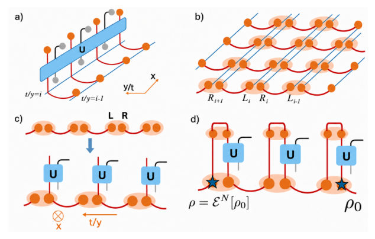
<figcaption class="paper-figure-caption"><b>Fig 1.</b> FIG. 1. a) Single step of a 1d quantum channel: a system chain (orange) is locally entangled with ancillas (gray) by a unitary circuit U, evolving the state from t = i −1 to t = i. Under the spacetime rotation t ↔y, these time slices become adjacent columns, y = i −1 and y = i, of a wavefunction on a ladder. b) Coupled-wire construction of the corresponding 2d SPT state in the absence of ancilla. Each column at y = i contains two spin- 1</figcaption>
</figure>
<figure class="paper-figure-card">
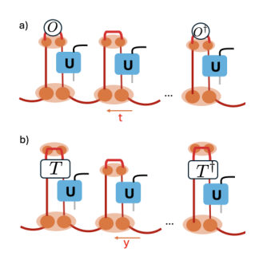
<figcaption class="paper-figure-caption"><b>Fig 2.</b> FIG. 2. a) The TRNC of Q probes temporal correlations generated by the repeated quantum channel. b) After im- plementing spacetime duality, the TRNC is mapped to the strange correlator of the corresponding 2d SPT state.</figcaption>
</figure>
<figure class="paper-figure-card">
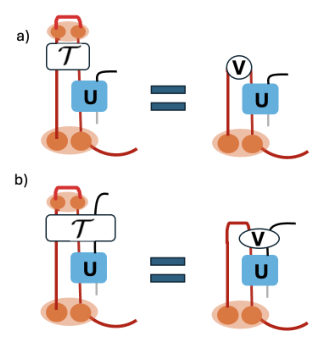
<figcaption class="paper-figure-caption"><b>Fig 3.</b> FIG. 3. a) Operator mapping for the TRNC in Eq. 28, which detects temporal correlations of the strong-symmetry charge. The left panel shows the corresponding operator insertion in the 2d SPT, while the right panel shows how the operators are inserted in the 1d quantum channel. b) Operator mapping for the TRNC in Eq. 30, which detects temporal correlations of the weak-symmetry charge. The left panel shows the cor- responding operator insertion in the 2d SPT, while the right panel shows how the operators are inserted in the quantum channel.</figcaption>
</figure>
<figure class="paper-figure-card">
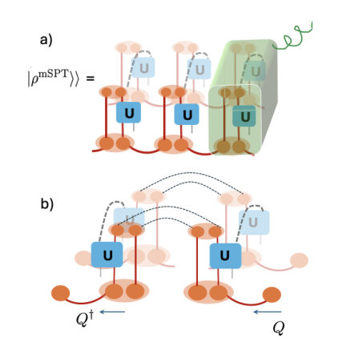
<figcaption class="paper-figure-caption"><b>Fig 4.</b> FIG. 4. a) The 2d mSPT defined in Eq. 22, shown in its Choi-doubled representation. The front and back layers cor- respond to the ket and bra spaces of ρmSPT, respectively. b) A spatial bipartition of |ρmSPT⟩⟩yields a reduced density matrix (RDM). Owing to the coupled-wire structure, it is sufficient to analyze a single building block of the wavefunction, whose RDM is related to Ω= Q†Q.</figcaption>
</figure>
<figure class="paper-figure-card">
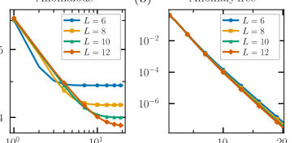
<figcaption class="paper-figure-caption"><b>Fig 5.</b> FIG. 5. The connected TRNC constructed from Ωfor quan- tum channels on rings of length L = 6, 8, 10, and 12, plot- ted as a function of the replica number N. a) The con- nected TRNC of Ωfor anomalous quantum-channel dynamics with a = c = 1/2 is plotted in log-log scale. b) The con- nected TRNC for anomaly-free quantum-channel dynamics with a = 0.04 and c = 0.36, and with y-axis shown in log scale, demonstrating the exponential decay of the TRNC.</figcaption>
</figure>
</div>

<p><strong>Summary.</strong> This paper extends the Lieb-Schultz-Mattis theorem to open quantum systems by analyzing the dynamics governed by quantum channels. Using a spacetime duality, the authors map the time evolution to a higher-dimensional mixed-state topological phase. This allows them to diagnose long-range temporal order, implied by LSM anomalies, by studying dual spatial correlators.</p>
<p><strong>Why it may be interesting.</strong> This work provides a powerful, general framework connecting fundamental theorems from condensed matter (LSM) to the non-equilibrium dynamics of open quantum systems using advanced topological concepts (mSPT).</p>
<details>
<summary>Detailed structure</summary>
<p><strong>Main problem.</strong> The paper investigates how Lieb-Schultz-Mattis (LSM) constraints, typically for ground states, dictate the dynamical signatures and temporal correlations in open quantum systems.</p>
<p><strong>Main result.</strong> The authors establish a spacetime duality mapping the dynamics of a quantum channel to a higher-dimensional mixed-state symmetry-protected topological (mSPT) phase, providing a bulk-boundary diagnostic for LSM anomalies.</p>
<p><strong>Method.</strong> The core method involves using spacetime duality to map the time evolution governed by a quantum channel's Liouvillian to a spatial correlation problem in a dual mSPT phase.</p>
<p><strong>Model / system.</strong> The system under study is an open quantum system undergoing Markovian dynamics, modeled by repeated application of a quantum channel $E$. The analysis uses the Liouvillian formalism on a doubled Hilbert space.</p>
<p><strong>Key observables.</strong> Twisted Rényi-N correlator (TRNC), Liouvillian singular spectrum, and the operator entanglement spectrum of the dual mSPT.</p>
<p><strong>Important parameters / regimes.</strong> The dimensionality $d$ of the channel, and the nature of the mixed anomaly between strong $S$ and weak $G$ symmetries.</p>
<p><strong>Assumptions / limitations.</strong> The analysis relies fundamentally on the spacetime duality correspondence between the channel dynamics and the mSPT phase.</p>
<p><strong>Figures summary.</strong> Not specified.</p>
<p><strong>Paper structure.</strong> The paper first extends the LSM theorem to open systems, then uses the Choi-Jamiolkowski isomorphism to map the channel to a transfer matrix $Q$. It then employs spacetime duality to map the temporal evolution to a higher-dimensional mSPT, defining the TRNC and relating it to the mSPT strange correlator.</p>
</details>
<details>
<summary>Abstract</summary>
<p>Quantum anomalies strongly constrain the possible behavior of many-body systems. A prime example is the Lieb-Schultz-Mattis (LSM) theorem, which relates UV symmetry and filling constraints to IR features of the energy spectrum and ground-state structure. Here, we ask how LSM constraints shape dynamical signatures and temporal correlations in open quantum systems. Using a spacetime duality, we show that the Liouvillian of a $d$-dimensional repeated quantum channel with a mixed anomaly between strong $S$ and weak $G$ symmetry can be mapped to a $(d{+}1)$-dimensional mixed-state symmetry-protected topological (mSPT) phase. Under this correspondence, the initial and steady states of the channel are identified with boundary states of the higher-dimensional mSPT in the presence of bulk projection. We further introduce the twisted Renyi-$N$ correlator (TRNC) as a probe of temporal correlations in the channel and demonstrate that it is dual to the mSPT strange correlator, providing a direct bulk-boundary route to diagnose long-range temporal order implied by the LSM anomaly. Finally, we identify the \textit{Liouvillian singular spectrum}, rather than the Liouvillian spectrum itself, as a more fundamental diagnostic of quantum anomalies, and show that it is dual to the operator entanglement spectrum of the mSPT.</p>
</details>
<p><sub><a href="#top">↑ back to top</a></sub></p>

<p><a id="paper-2608.27411"></a></p>
<h3 id="a-continuous-confinement-deconfinement-transition-in-a-triangular-quantum-magnet">⭐ <a href="http://arxiv.org/abs/2608.27411v1">A continuous confinement-deconfinement transition in a triangular quantum magnet</a></h3>
<p><strong>Highlighted author(s):</strong> Johannes Knolle<br>
<strong>Authors:</strong> Suguru Hosoi, Sejun Park, Michihiro Hirata, Minseong Lee, Adam P Dioguardi, Joe D Thompson, Filip Ronning, Allen O Scheie, Kumpei Imamura, Kenichiro Hashimoto, Takasada Shibauchi, Bishnu P Belbase, Arjun Unnikrishnan, Johannes Knolle, Arnab Banerjee, Yuji Matsuda<br>
<strong>Type:</strong> experiment · <strong>Category:</strong> strongly correlated electrons · <strong>PDF:</strong> <a href="https://arxiv.org/pdf/2608.27411v1">https://arxiv.org/pdf/2608.27411v1</a><br>
<strong>Analysis basis:</strong> full PDF text, analyzed in chunks
<strong>Topic relevance:</strong> <code>analog quantum simulation</code> <strong>3/5</strong></p>
<div class="figure-strip-hint">↔ Scroll figures horizontally</div>
<div class="paper-figures-scroll">
<figure class="paper-figure-card">
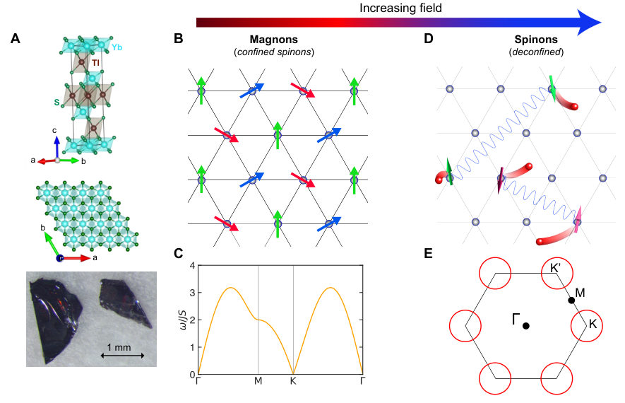
<figcaption class="paper-figure-caption"><b>Fig 1.</b> FIG. 1. Crystal structure, magnetic order and quantum spin liquid state in TlYbS2. (A) Trigonal crystal structure of TlYbS2. Top, layered structure viewed along the c axis showing Yb (cyan), S (green), and Tl (brown) atoms. Center, triangular lattice of Yb3+ ions in the ab plane. Bottom, optical image of representative thin plate-like single crystals. See Supplementary Materials for details of crystal growth and structural characterization. Crystal structures were visualized using VESTA software [20]. (B to E) Schematic illustration of the confinement–deconfinement transition in TlYbS2 under magnetic field applied along the c axis. The field drives a continuous transition from a phase with...</figcaption>
</figure>
<figure class="paper-figure-card">
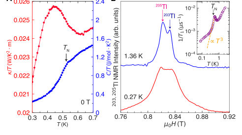
<figcaption class="paper-figure-caption"><b>Fig 2.</b> FIG. 2. Evidence for AFM ordering. (A) Temperature dependence of κ/T (red) and C/T (blue) at zero field. A kink in C/T and an inflection in κ/T at TN ≈0.53 K identify the onset of AFM order. On cooling, κ/T rises below ∼0.6 K and peaks at ∼0.45 K as magnetic scattering is suppressed by developing spin correlations, while the broad feature in C/T above TN reflects the short-range correlations expected for a triangular-lattice antiferromagnet. (B) 203,205Tl NMR spec- tra in the low-H regime for H ∥c. Two sharp peaks corre- sponding to the 203Tl and 205Tl resonances are observed. The spectrum exhibits pronounced broadening and a substantial change in lineshape below TN, consistent with a...</figcaption>
</figure>
<figure class="paper-figure-card">
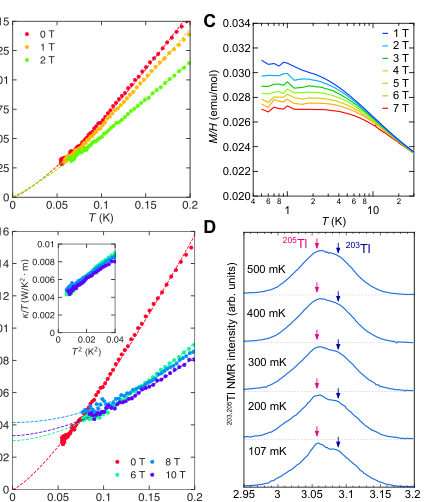
<figcaption class="paper-figure-caption"><b>Fig 3.</b> FIG. 3. Evidence for a field-induced U(1) quantum spin liquid state with a spinon Fermi surface. (A) Temperature dependence of κ/T, at low magnetic fields for H ∥c. The dashed lines represent polynomial fits to the data, used to estimate the T →0 limit. The extrapolated residual term κ0/T vanishes in the AFM ordered state. (B) κ/T at higher magnetic fields in the high-field phase. A finite resid- ual term κ0/T emerges, indicating the appearance of mobile gapless excitations. Inset: κ/T plotted against T 2, demon- strating the finite residual term κ0/T. (C) Temperature de- pendence of the magnetic susceptibility M/H measured at several magnetic fields for H ∥c. A T-independent Pauli- like...</figcaption>
</figure>
<figure class="paper-figure-card">
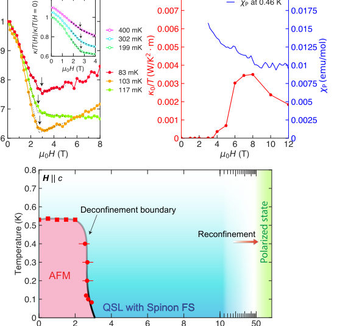
<figcaption class="paper-figure-caption"><b>Fig 4.</b> FIG. 4. H–T phase diagram of TlYbS2. (A) Magnetic-field dependence of κ/T for H ∥c, normalized by its zero-field value, measured at several temperatures. A clear kink is observed at µ0H ≈2.92 T at 83 mK, consistent with a continuous phase transition between the AFM and QSL phases. Arrows indicate the kink positions used to determine the phase boundary. Inset: field dependence of κ/T at higher temperatures, where the anomaly broadens but remains visible. For clarity, the data are vertically offset by 0.05. (B) Field dependence of the residual linear term κ0/T obtained from low-T extrapolation of κ/T, together with the Pauli-like susceptibility χP measured at 0.46 K in pulsed field for H ∥c....</figcaption>
</figure>
</div>

<p><strong>Summary.</strong> This work reports evidence for a continuous confinement-deconfinement transition in the triangular magnet TlYbS2. By measuring transport and magnetic properties across a critical field, the authors distinguish the ordered antiferromagnetic state from a gapless Quantum Spin Liquid. The findings suggest the physics is governed by fractionalized excitations, offering a solid-state realization of concepts from high-energy theory.</p>
<p><strong>Why it may be interesting.</strong> The experimental demonstration of a transition involving fractionalized excitations (spinons) in a solid-state magnet provides a tangible platform to study concepts usually confined to high-energy particle physics (like QCD confinement).</p>
<details>
<summary>Detailed structure</summary>
<p><strong>Main problem.</strong> The study investigates the continuous confinement-deconfinement transition in a quantum magnet, drawing an analogy to the transition in quantum chromodynamics.</p>
<p><strong>Main result.</strong> The triangular-lattice antiferromagnet TlYbS2 exhibits evidence for a field-induced continuous transition from an ordered AFM phase to a gapless U(1) Quantum Spin Liquid (QSL) phase.</p>
<p><strong>Method.</strong> The research combines multiple experimental techniques, including magnetization, specific heat, thermal conductivity, and NMR spectroscopy, across varying magnetic fields.</p>
<p><strong>Model / system.</strong> The physical system is the triangular-lattice antiferromagnet TlYbS2. The transition is theorized to occur between a phase characterized by bosonic magnons (confined) and a QSL phase hosting fermionic spinons (deconfined).</p>
<p><strong>Key observables.</strong> Thermal conductivity ($\kappa/T$) showing a finite residual term ($\kappa_0/T$), Pauli-like susceptibility, and temperature-independent NMR Knight shift in the high-field phase.</p>
<p><strong>Important parameters / regimes.</strong> The transition is observed around a critical field $\mu_0H_c \approx 3\,\mathrm{T}$ and the Néel temperature $T_\mathrm{N} \approx 0.53\,\mathrm{K}$.</p>
<p><strong>Assumptions / limitations.</strong> The transition is argued to be continuous and governed by fractionalized excitations, moving beyond the standard Ginzburg-Landau description.</p>
<p><strong>Figures summary.</strong> Figures illustrate the structural details, the anomalies in $C/T$ and $\kappa/T$ marking the AFM ordering at $T_N$, and the emergence of the gapless QSL state signatures at high fields.</p>
<p><strong>Paper structure.</strong> The paper first establishes the material's structure and then presents evidence for the AFM ordering ($T_N$). Subsequently, it details high-field measurements showing the transition into the gapless QSL state, ruling out alternative magnetic ordering scenarios.</p>
</details>
<details>
<summary>Abstract</summary>
<p>A continuous transition between phases hosting distinct excitations---bosonic magnons versus fermionic spinons---is a long-sought phenomenon in quantum magnetism, analogous to the confinement--deconfinement transition in quantum chromodynamics. We report evidence for such a transition in the triangular-lattice antiferromagnet TlYbS$_2$. Antiferromagnetic order develops below $T_\mathrm{N} \approx 0.53\,\mathrm{K}$. A $c$-axis field suppresses this order, driving the system into a gapless quantum spin liquid with a spinon Fermi surface above $μ_0 H_\mathrm{c} \approx 3\,\mathrm{T}$, evidenced by a finite residual linear term in thermal conductivity, a Pauli-like susceptibility, and a temperature-independent NMR Knight shift. Approaching $H_\mathrm{c}$ from above, the scattering rate of itinerant excitations is strongly enhanced while their density of states shows no critical enhancement, atypical of conventional magnetic quantum criticality. These results point to a continuous confinement--deconfinement transition governed by fractionalized excitations beyond the Ginzburg--Landau paradigm.</p>
</details>
<p><sub><a href="#top">↑ back to top</a></sub></p>

<p><a id="paper-2608.26251"></a></p>
<h3 id="why-cooper-pairs-live-in-ads2-a-spectral-analysis-of-the-yukawa-syk-model">⭐ <a href="http://arxiv.org/abs/2608.26251v1">Why Cooper pairs live in AdS2: a spectral analysis of the Yukawa-SYK model</a></h3>
<p><strong>Highlighted author(s):</strong> Jörg Schmalian<br>
<strong>Authors:</strong> Veronika Carolin Stangier, Jörg Schmalian<br>
<strong>Type:</strong> theory · <strong>Category:</strong> strongly correlated electrons · <strong>PDF:</strong> <a href="https://arxiv.org/pdf/2608.26251v1">https://arxiv.org/pdf/2608.26251v1</a><br>
<strong>Analysis basis:</strong> full PDF text, analyzed in chunks
<strong>Topic relevance:</strong> <code>Keldysh / 2PI / non-Gaussian methods</code> <strong>2/5</strong></p>
<div class="figure-strip-hint">↔ Scroll figures horizontally</div>
<div class="paper-figures-scroll">
<figure class="paper-figure-card">
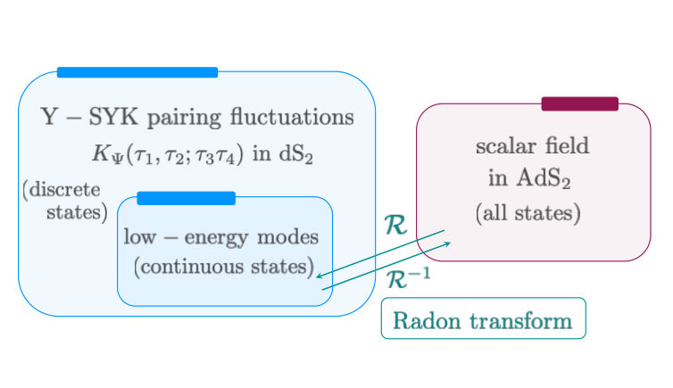
<figcaption class="paper-figure-caption"><b>Fig 1.</b> Figure 1. Schematic illustration of the holographic map between pairing fluctuations in the Y-SYK model and a scalar field in AdS2. Pairing fluctuations of scale-invariant fermions, governed by the pairing kernel KΨ(τ1, τ2; τ3, τ4), span the two-dimensional de Sitter space dS2. This space contains both continuous and discrete eigenstates of KΨ. The discrete states remain non-critical w.r.t. the onset of superconductivity and can therefore be excluded from the universal low-energy theory of fluctuating Cooper-pairs. The remaining continuous sector can be mapped, via an invertible Radon transform R, onto the full Euclidean anti-de Sitter space AdS2, which thus provides the natural geometric...</figcaption>
</figure>
<figure class="paper-figure-card">
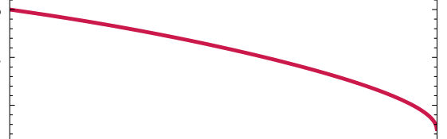
<figcaption class="paper-figure-caption"><b>Fig 2.</b> Figure 2. Exponent ∆for varying ratio of the boson and fermion flavor numbers M and N, respectively, where ∆(M ≪N) →1/2 −M/(8N) and ∆(M ≫N) →1/4 + (N/(8πM))1/2.</figcaption>
</figure>
<figure class="paper-figure-card">
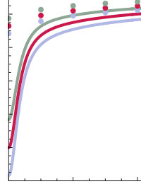
<figcaption class="paper-figure-caption"><b>Fig 3.</b> Figure 3. 1 −k (h), with k(h) the eigenvalue of the the mutually similar pairing kernels KF , KΦ, KΘ or KΨ, as function of p (for the continuous spectrum with h = 1</figcaption>
</figure>
<figure class="paper-figure-card">
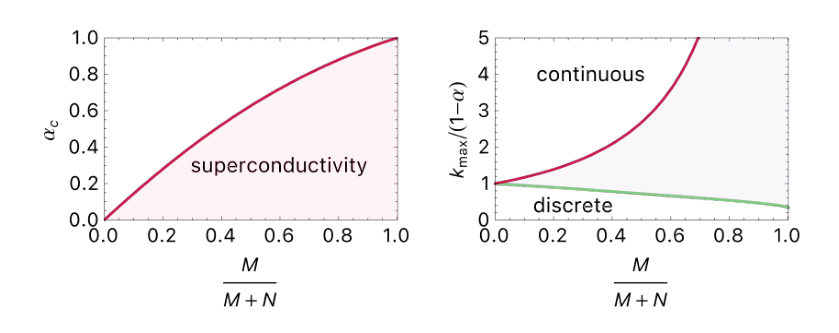
<figcaption class="paper-figure-caption"><b>Fig 4.</b> Figure 4. Left Panel: Critical value αc of the pair-breaking parameter α for varying ratio of the boson and fermion flavor numbers M and N, respectively. Right panel: maximal eigenvalue of the continuous part of the spectrum k (1/2) (red), corresponding to p = 0 in h = 1</figcaption>
</figure>
</div>

<p><strong>Summary.</strong> This paper provides a spectral foundation for understanding Cooper pairing in the Y-SYK model by analyzing its large-N effective action. It shows that the critical low-energy physics is confined to the continuous spectrum of the associated de Sitter Laplacian. This continuous sector can then be rigorously mapped via the Radon transform to a local scalar field theory propagating in AdS2, clarifying the holographic description of superconductivity.</p>
<p><strong>Why it may be interesting.</strong> The explicit derivation of a local field theory (AdS2) from a bilocal pairing theory provides a rigorous, microscopic justification for holographic approaches used to model superconductivity in strongly correlated systems.</p>
<details>
<summary>Detailed structure</summary>
<p><strong>Main problem.</strong> To establish the spectral foundation for the geometric formulation of Cooper pairing in the Yukawa–Sachdev–Ye–Kitaev (Y-SYK) model, clarifying how a local bulk field emerges from the bilocal pairing theory.</p>
<p><strong>Main result.</strong> The superconducting instability and low-energy fluctuations are confined to the continuous scattering sector, which allows the bilocal Cooper-pair field to be mapped onto a local scalar matter field propagating in AdS2.</p>
<p><strong>Method.</strong> The analysis uses spectral methods, deriving the Gaussian fluctuation kernel from the large-N bilocal effective action and resolving pairing fluctuations using the de Sitter space Laplacian.</p>
<p><strong>Model / system.</strong> The study focuses on Cooper pairing in the Y-SYK model, a system exhibiting quantum criticality, analyzed through its large-N effective action.</p>
<p><strong>Key observables.</strong> The pairing kernel eigenvalue k(h), the superconducting instability condition (eigenvalue reaching unity), and the resulting Klein-Gordon action on AdS2.</p>
<p><strong>Important parameters / regimes.</strong> Conformal weight h, the continuous scattering sector ($h = 1/2 \pm ip$), and the AdS2 Breitenlohner-Freedman stability bound.</p>
<p><strong>Assumptions / limitations.</strong> The analysis relies on the saddle-point approximation and the assumption that the physical low-energy theory is governed by the continuous spectrum of the de Sitter Laplacian.</p>
<p><strong>Figures summary.</strong> Figure 1 schematically illustrates the holographic map: pairing fluctuations in Y-SYK span dS2 (with continuous and discrete eigenstates); the continuous sector maps via an invertible Radon transform R to AdS2.</p>
<p><strong>Paper structure.</strong> The paper proceeds by deriving the fluctuation kernel, analyzing its spectrum (continuous vs. discrete), and then using the Radon transform to project the relevant continuous sector dynamics onto a local scalar field theory in AdS2.</p>
</details>
<details>
<summary>Abstract</summary>
<p>We establish the spectral foundation of the geometric formulation of Cooper pairing in the Yukawa--Sachdev--Ye--Kitaev model. Starting from the large-$N$ bilocal effective action, we derive the Gaussian fluctuation kernel in the even-frequency spin-singlet Cooper channel. Following the construction of Maldacena and Stanford, we determine the kernel eigenvalue $k\left(h\right)$ analytically for arbitrary conformal weight $h$ and resolve the pairing fluctuations into the continuous and discrete sectors of the associated de-Sitter space Laplacian. We show that the superconducting instability and the universal low-energy fluctuations near it reside entirely in the continuous scattering sector, while the discrete modes remain non-critical. Expanding the kernel about the lowest continuum mode yields a Klein--Gordon action on ${\rm dS}_2$, restricted to the continuous spectral subspace. This is precisely the subspace on which the inverse Radon transform to ${\rm AdS}_2$ is well defined. The projected bilocal Cooper-pair field can therefore be mapped onto a scalar matter field propagating in ${\rm AdS}_2$, without requiring any further spectral restriction on the bulk theory. Our results provide the missing microscopic justification for the projection implicit in earlier holographic formulations and clarify how a local bulk field emerges from the bilocal pairing theory.</p>
</details>
<p><sub><a href="#top">↑ back to top</a></sub></p>

<p><a id="paper-2608.26241"></a></p>
<h3 id="fast-ghz-encoding-with-math35math-fidelity">⭐ <a href="http://arxiv.org/abs/2608.26241v1">Fast GHZ encoding with $1-o(1)$ fidelity</a></h3>
<p><strong>Highlighted author(s):</strong> Alexey V. Gorshkov<br>
<strong>Authors:</strong> Laura Shou, T. C. Mooney, Twesh Upadhyaya, Alexey V. Gorshkov<br>
<strong>Type:</strong> theory · <strong>Category:</strong> quantum information and computing · <strong>PDF:</strong> <a href="https://arxiv.org/pdf/2608.26241v1">https://arxiv.org/pdf/2608.26241v1</a><br>
<strong>Analysis basis:</strong> full PDF text, analyzed in chunks</p>
<div class="figure-strip-hint">↔ Scroll figures horizontally</div>
<div class="paper-figures-scroll">
<figure class="paper-figure-card">
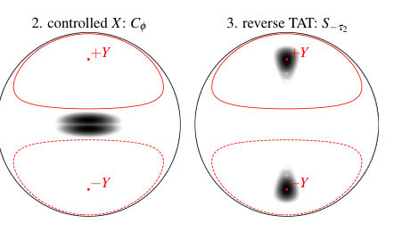
<figcaption class="paper-figure-caption"><b>Fig 1.</b> Figure 1. Illustration of the first three steps (TAT, controlled X rotation, reverse TAT) of the protocol in [Yin25a] on the Dicke sphere with N = 1000. The Husimi distribution of the current state of each packet is shown overlayed in log scale, using a Lambert azimuthal projection of the sphere with the center being the +Z pole. Note that due to the log scale, the packets in the third panel after the controlled X step are actually much more separated than they may appear. While not relevant for the protocol in [Yin25a], the red contours show the boundaries y = ±1/3, to compare with Figure 2.</figcaption>
</figure>
<figure class="paper-figure-card">
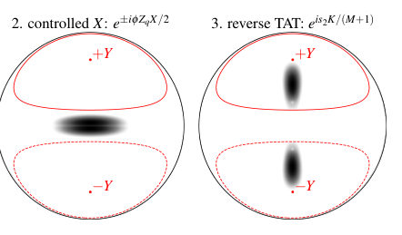
<figcaption class="paper-figure-caption"><b>Fig 2.</b> Figure 2. Illustration of the TAT packet separation in the new protocol, which consists of the same steps as the start of the protocol from [Yin25a] shown in Figure 1, but with different squeezing and rotation parameters. The parameters used for the three steps are those in the table in Section 1.3 with a = 9/20, κ = 9, and M = 1000. The red contours show the boundaries y = ±1/3. In Step 1, we squeeze the state further than in Figure 1, while in Step 2, we do a shorter controlled X rotation. In Step 3, we squeeze a smaller amount to send the “core” of the packet past the y = ±1/3 boundaries, but not all the way to the ±Y poles. Stopping before reaching the ±Y poles lets us handle the exact...</figcaption>
</figure>
<figure class="paper-figure-card">
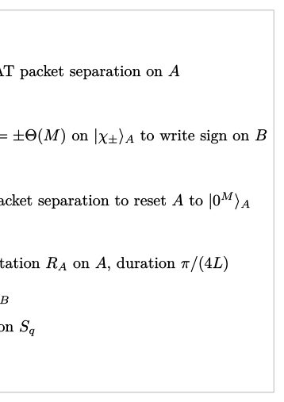
<figcaption class="paper-figure-caption"><b>Fig 3.</b> Figure 3. Sequence of operations in the new GHZ encoding protocol, with the target state (i.e. ignoring errors in the QSP read/write step) for each step shown. The changes of the state in each step are shown in red color.</figcaption>
</figure>
</div>

<p><strong>Summary.</strong> This paper presents a theoretical protocol to generate highly entangled Greenberger–Horne–Zeilinger (GHZ) states on $N$ qubits with near-perfect fidelity. By ingeniously combining spin-squeezing dynamics with Quantum Signal Processing, the authors achieve a time complexity of $O(\log N/N)$, matching the best-known theoretical lower bound. This represents a significant advancement in the speed and reliability of quantum state preparation.</p>
<p><strong>Why it may be interesting.</strong> This work provides a concrete, optimized quantum circuit implementation for generating highly entangled states (GHZ states) at the fastest possible rate, which is crucial for quantum communication and computation protocols.</p>
<details>
<summary>Detailed structure</summary>
<p><strong>Main problem.</strong> The primary goal is to demonstrate a method for achieving Greenberger–Horne–Zeilinger (GHZ) encoding on $N$ qubits with high fidelity in a time complexity that saturates the theoretical lower bound.</p>
<p><strong>Main result.</strong> The authors propose a protocol that achieves $(1-o(1))$-fidelity GHZ encoding in time $O(\log N/N)$, matching the established lower bound for all-to-all Hamiltonians.</p>
<p><strong>Method.</strong> The protocol combines spin-squeezing dynamics (Two-Axis Twisting, TAT) with Quantum Signal Processing (QSP) to efficiently implement the necessary unitary transformations.</p>
<p><strong>Model / system.</strong> The system is an $N$-qubit quantum processor governed by all-to-all 2-local Hamiltonians. The encoding maps a single-qubit state into the GHZ subspace via controlled unitary evolution.</p>
<p><strong>Key observables.</strong> Fidelity of the GHZ state, time complexity $T$, and the separation of quantum state packets on the Bloch/Dicke sphere.</p>
<p><strong>Important parameters / regimes.</strong> The system size $N$, the interaction strength decay exponent $\gamma$, and the time scales $O(\log N/N)$.</p>
<p><strong>Assumptions / limitations.</strong> The analysis relies on the continuum limit approximation for the Gaussian packet core and assumes the QSP method accurately implements the required sign function.</p>
<p><strong>Figures summary.</strong> Figure 1 illustrates the three steps of the protocol from previous work, while Figure 2 and Figure 3 detail the state evolution in the new, optimized protocol, showing packet separation on the Dicke sphere.</p>
<p><strong>Paper structure.</strong> The paper establishes the theoretical lower bounds for GHZ encoding time, introduces the novel protocol combining TAT squeezing and QSP, and then rigorously analyzes the fidelity and time complexity through detailed mathematical derivations involving operator derivatives and error bounding.</p>
</details>
<details>
<summary>Abstract</summary>
<p>We prove that $(1-o(1))$-fidelity $N$-qubit Greenberger--Horne--Zeilinger (GHZ) encoding can be performed in time $O(\log N/N)$ using all-to-all 2-local Hamiltonians with bounded 2-qubit interaction terms. This saturates the theoretical lower bound $Ω(\log N/N)$, and by rescaling, also saturates the lower bound on signaling time for Hamiltonians with power-law interaction strengths $1/r^γ$, $γ<d$ in dimension $d$. The protocol uses spin-squeezing dynamics combined with quantum signal processing.</p>
</details>
<p><sub><a href="#top">↑ back to top</a></sub></p>

<p><a id="paper-2608.27387"></a></p>
<h3 id="stochastic-transport-of-a-goldstone-mode-in-a-self-organized-atomic-crystal"><a href="http://arxiv.org/abs/2608.27387v1">Stochastic transport of a Goldstone mode in a self-organized atomic crystal</a></h3>
<p><strong>Authors:</strong> Zhanhai Yu, Di Xiang, Xiaotian Zhang, Hao Zhang<br>
<strong>Type:</strong> both · <strong>Category:</strong> other · <strong>PDF:</strong> <a href="https://arxiv.org/pdf/2608.27387v1">https://arxiv.org/pdf/2608.27387v1</a><br>
<strong>Analysis basis:</strong> full PDF text, analyzed in chunks
<strong>Topic relevance:</strong> 🔥 <code>non-equilibrium universality</code> <strong>4/5</strong> · 🔥 <code>quantum optics experiment</code> <strong>4/5</strong> · <code>Tavis-Cummings &amp; cavity-many-emitter</code> <strong>3/5</strong> · <code>analog quantum simulation</code> <strong>3/5</strong> · <code>driven-dissipative phase transition</code> <strong>3/5</strong> · <code>methods for driven-dissipative</code> <strong>3/5</strong> · <code>quantum measurements</code> <strong>3/5</strong> · <code>Keldysh / 2PI / non-Gaussian methods</code> <strong>2/5</strong> · <code>correlated / nonlocal dissipation</code> <strong>2/5</strong> · <code>Frenkel-Kontorova</code> <strong>1/5</strong> · <code>interference shaping light</code> <strong>1/5</strong></p>
<div class="figure-strip-hint">↔ Scroll figures horizontally</div>
<div class="paper-figures-scroll">
<figure class="paper-figure-card">
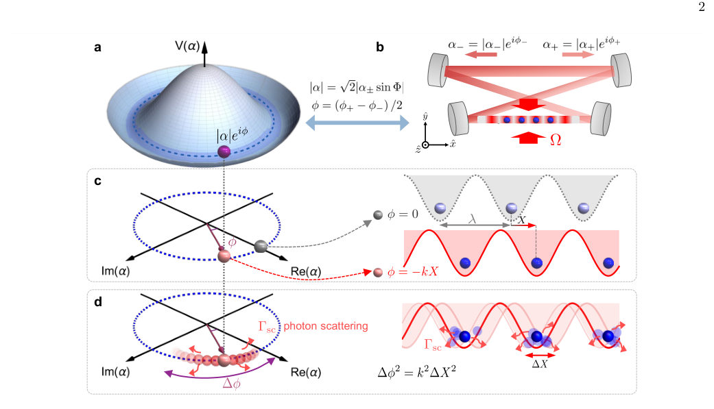
<figcaption class="paper-figure-caption"><b>Fig 1.</b> FIG. 1. Ring-cavity system for Goldstone-mode dynamics. a, Effective Mexican-hat potential for the atom-cavity system with the U(1) symmetry. The purple sphere denotes a symmetry-broken collective state of the atoms and their self- generated optical lattice, with the order-parameter amplitude |α| and azimuthal phase ϕ. b, Experimental setup. Inside the ring cavity, atoms driven by a transverse standing-wave pump field with Rabi frequency Ωemit light into two counter-propagating traveling-wave cavity modes ˆa±, with complex amplitudes α± = |α±|eiϕ±. The order parameter and cavity fields have the relations |α| = √</figcaption>
</figure>
<figure class="paper-figure-card">
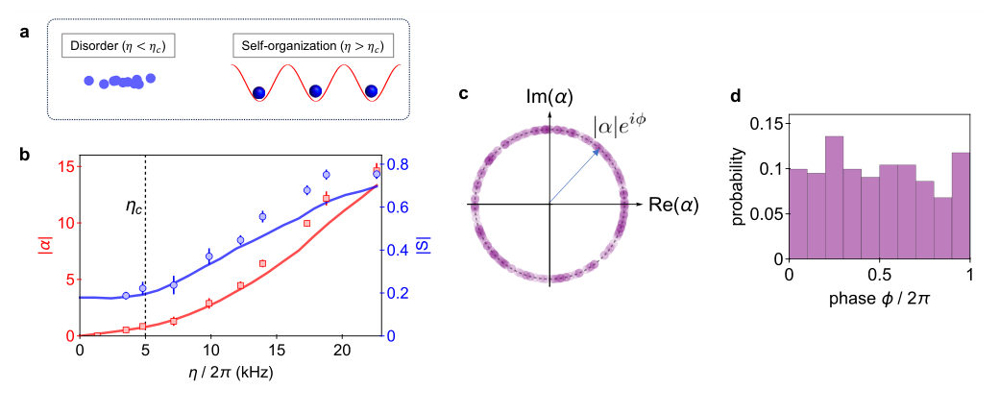
<figcaption class="paper-figure-caption"><b>Fig 2.</b> FIG. 2. Superradiant self-organization and spontaneous U(1) symmetry breaking. a, Illustration of the self- organization. Below the threshold (η &lt; ηc), atoms remain disordered and do not generate an optical lattice. Above threshold (η &gt; ηc), atoms self-organize into an emergent lattice with period λ. b, Order-parameter amplitude |α| and atomic structure</figcaption>
</figure>
<figure class="paper-figure-card">
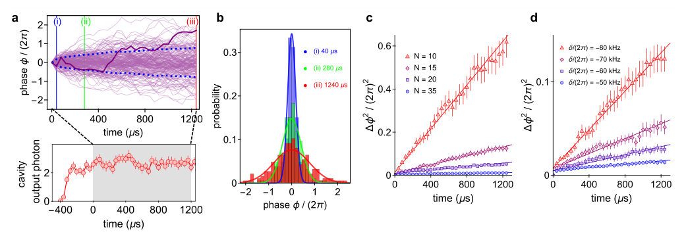
<figcaption class="paper-figure-caption"><b>Fig 3.</b> FIG. 3. Real-time observation of stochastic Goldstone-mode transport. a, The phase ϕ undergoes stochastic motion over time (top) while the cavity photon number remains approximately constant after a settling time (bottom). The transmitted cavity field is measured by heterodyne detection. The panel shows 186 experimental trajectories. The dark purple line is one representative trajectory. Blue dashed lines indicate standard deviation ±∆ϕ(t). Data are taken at N = 10, δ = −2π × 80 kHz, and Ω= 2π × 125 MHz. b, Phase distributions at the times marked in a. Solid lines are Gaussian fits. c, Phase variance ∆ϕ2 versus time for different atom numbers N at fixed pump Rabi frequency Ω= 2π × 125 MHz...</figcaption>
</figure>
<figure class="paper-figure-card">
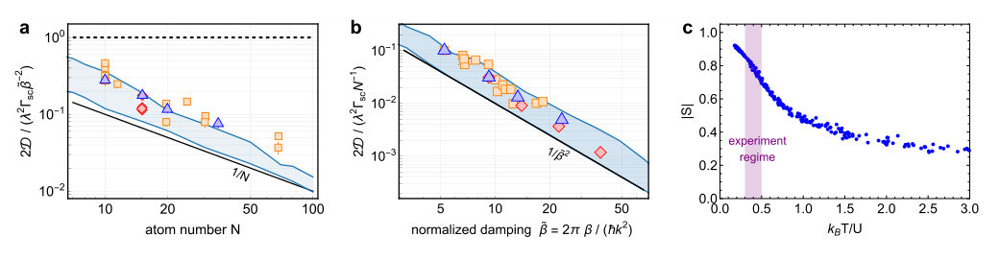
<figcaption class="paper-figure-caption"><b>Fig 4.</b> FIG. 4. Universal scaling of the normalized diffusion constant. a, Normalized diffusion constant versus atom number N. The solid line represents the zero-temperature theory, D ∝1/N. The dashed line at unity indicates the diffusion constant for independent atoms. b, Normalized diffusion constant versus the normalized damping coefficient ˜β. The solid line is the zero-temperature theory, D ∝1/˜β2. Small deviations of the measurements from the zero-temperature prediction arise from finite temperature effects. Blue triangles and red diamonds correspond to the data in Fig. 3d and Fig. 3e, respectively. Orange squares denote measurements taken under other conditions, including simultaneous scans...</figcaption>
</figure>
</div>

<p><strong>Summary.</strong> This paper investigates the stochastic transport of a Goldstone mode in an atomic crystal coupled to an optical ring cavity. By measuring the collective motion of the lattice phase, the authors demonstrate that the atoms move coherently, showing diffusion scaling inversely with atom number. This work opens new avenues for studying non-equilibrium collective dynamics in quantum matter.</p>
<p><strong>Why it may be interesting.</strong> This work provides a direct, real-time measurement of Goldstone mode dynamics in a driven-dissipative setting, extending the study beyond traditional frequency-domain excitation measurements into non-equilibrium transport.</p>
<details>
<summary>Detailed structure</summary>
<p><strong>Main problem.</strong> The study aims to track the stochastic transport of a Goldstone mode, which emerges from the spontaneous breaking of a continuous symmetry, in a system subject to intrinsic fluctuations and dissipation.</p>
<p><strong>Main result.</strong> The atoms move collectively as a rigid object, resulting in a diffusion constant that scales inversely with the number of atoms ($D \propto 1/N$), and the transport exhibits universal scaling behavior.</p>
<p><strong>Method.</strong> The research combines theoretical modeling (Langevin equations) with experimental measurement techniques, specifically monitoring the cavity output phase via heterodyne detection to track the center-of-mass motion.</p>
<p><strong>Model / system.</strong> The system is a self-organized atomic crystal formed by atoms coupled to an optical ring cavity. The physics is governed by a Hamiltonian exhibiting a U(1) symmetry that is spontaneously broken, leading to the Goldstone mode.</p>
<p><strong>Key observables.</strong> Diffusion constant ($D$), cavity output phase ($\phi$), phase variance ($\Delta\phi^2$), and the normalized diffusion constant.</p>
<p><strong>Important parameters / regimes.</strong> Atom number ($N$), damping coefficient ($    ilde{eta}$), and the ratio of thermal energy to lattice depth ($k_B T/U$).</p>
<p><strong>Assumptions / limitations.</strong> The analysis relies on the dispersive regime, the mean-field approximation, and the assumption that atoms move as a rigid body at low temperatures.</p>
<p><strong>Figures summary.</strong> Figures illustrate the ring-cavity setup mapping phase to position, show the transition to self-organized lattice, and demonstrate universal scaling of the diffusion constant versus damping and atom number.</p>
<p><strong>Paper structure.</strong> The paper establishes the physical model via the Hamiltonian and symmetry breaking, develops the Langevin equation for the collective coordinate, and then analyzes the resulting stochastic transport, culminating in measurements of scaling laws.</p>
</details>
<details>
<summary>Abstract</summary>
<p>Spontaneous breaking of a continuous symmetry produces a massless Goldstone mode that can evolve across a degenerate manifold at zero energy cost. Goldstone modes have been identified primarily through excitation spectra, mode softening or collective oscillations. However, their time-domain transport under intrinsic fluctuations and dissipation has remained largely unexplored. Here we directly track the stochastic transport of a Goldstone mode in a self-organized atomic crystal inside an optical ring cavity. The ring cavity maps the order-parameter phase onto the real-space position of the emergent crystal. Without any external perturbation, fundamental photon-scattering recoil drives the collective transport, while cavity dissipation generates friction. We monitor individual trajectories of the atoms and their self-generated optical lattice by measuring the cavity output phase. We find that the diffusion constant decreases as $1/N$, indicating that all atoms move collectively as a rigid object rather than independently. By tuning the Langevin driving force and cavity-mediated damping, we show that the normalized diffusion constant collapses onto a single universal curve. This work extends the study of continuous symmetry breaking from excitation-frequency measurements to real-time tracking of transport, and opens routes for studying non-equilibrium collective transport, phonon dynamics, and defect formation in driven-dissipative quantum matter.</p>
</details>
<p><sub><a href="#top">↑ back to top</a></sub></p>

<p><a id="paper-2608.27237"></a></p>
<h3 id="long-time-dynamics-of-many-body-open-quantum-systems-using-quantum-generating-functions"><a href="http://arxiv.org/abs/2608.27237v1">Long-time Dynamics of Many-body Open Quantum Systems using Quantum Generating Functions</a></h3>
<p><strong>Authors:</strong> Katha Ganguly, Dario Poletti, Bijay Kumar Agarwalla<br>
<strong>Type:</strong> theory · <strong>Category:</strong> statistical mechanics · <strong>PDF:</strong> <a href="https://arxiv.org/pdf/2608.27237v1">https://arxiv.org/pdf/2608.27237v1</a><br>
<strong>Analysis basis:</strong> full PDF text, analyzed in chunks
<strong>Topic relevance:</strong> 🔥 <code>methods for driven-dissipative</code> <strong>4/5</strong> · <code>Full counting statistics</code> <strong>3/5</strong> · <code>Keldysh / 2PI / non-Gaussian methods</code> <strong>3/5</strong> · <code>correlated / nonlocal dissipation</code> <strong>3/5</strong> · <code>driven-dissipative phase transition</code> <strong>3/5</strong> · <code>non-equilibrium universality</code> <strong>3/5</strong> · <code>analog quantum simulation</code> <strong>2/5</strong> · <code>quantum measurements</code> <strong>1/5</strong> · <code>scars &amp; prethermalization</code> <strong>1/5</strong></p>
<div class="figure-strip-hint">↔ Scroll figures horizontally</div>
<div class="paper-figures-scroll">
<figure class="paper-figure-card">
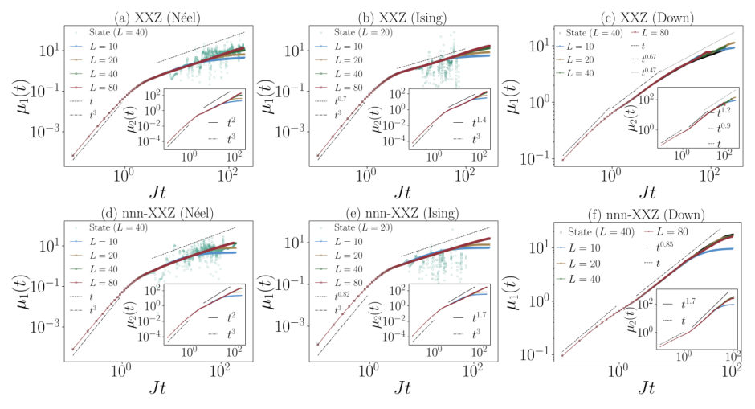
<figcaption class="paper-figure-caption"><b>Fig 1.</b> FIG. 1. First moment µ1(t) (main figures) and second moment µ2(t) (inset figures) of the transferred magnetization for the XXZ chain (top panel) and nnn-XXZ chain (bottom panel), subjected to excitation injection for the initial states (a) N´eel, (b) Ising-type, and (c) all spins down. Results are shown for system sizes L = 10, 20, 40, and 80. The scattered data points correspond to the state-evolution method using MPS, while the solid curves are obtained from the QGF approach. For both models, we set ∆= 1.0J, ΓG = 1.0J, |λ| = 0.03, and ϕ = 0. For the nnn-XXZ model, the next-nearest-neighbour coupling is Jb = J. In both the QGF and MPS simulations, the dynamics is simulated using the TEBD...</figcaption>
</figure>
<figure class="paper-figure-card">
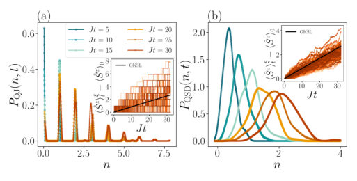
<figcaption class="paper-figure-caption"><b>Fig 2.</b> FIG. 2. Probability distribution of the injected charge ⟨Sz⟩ξ t − ⟨Sz⟩0 = n, at different times Jt, obtained by sampling 200 quantum trajectories for the (a) quantum-jump (QJ) and (b) quantum-state-diffusion (QSD) protocols. In both cases, we consider the XXZ chain (Jb = 0) with anisotropy ∆= 1.0J. The remaining parameters are ΓG = 0.1J, and λ = 0.03, for a system of size L = 20. The simulations are performed using TEBD algorithm with bond dimension χ = 256 and a truncation cutoff 10−10. The insets in (a) and (b) show the time evolution of the injected charge ⟨ˆSz⟩ξ t −⟨ˆSz⟩0 for different trajectories. The solid black curve in the inset denotes the ensemble-averaged injected charge, which...</figcaption>
</figure>
</div>

<p><strong>Summary.</strong> This paper introduces the Quantum Generating Function (QGF) formalism to overcome the computational bottleneck of simulating long-time dynamics in open quantum many-body systems. By calculating moments without evolving the full quantum state, the authors successfully characterize transport phenomena in spin chains. This establishes QGF as a robust and scalable method for studying non-equilibrium quantum dynamics.</p>
<p><strong>Why it may be interesting.</strong> This work provides a powerful, scalable theoretical tool (QGF) to analyze non-equilibrium dynamics in complex quantum systems, which is highly relevant for understanding energy/particle transport in quantum materials.</p>
<details>
<summary>Detailed structure</summary>
<p><strong>Main problem.</strong> The primary challenge addressed is efficiently simulating the long-time dynamics of many-body open quantum systems, where conventional methods struggle due to Hilbert space growth.</p>
<p><strong>Main result.</strong> The Quantum Generating Function (QGF) formalism provides an efficient and scalable framework to compute higher-order moments and fluctuation statistics for open systems, successfully characterizing distinct initial state-dependent transport regimes in XXZ and nnn-XXZ chains.</p>
<p><strong>Method.</strong> The authors developed and applied the QGF formalism, which computes dynamics via Fourier transformation of the probability distribution, allowing moment extraction without explicitly evolving the full quantum state.</p>
<p><strong>Model / system.</strong> The study focuses on open quantum many-body systems, specifically using the XXZ and next-nearest-neighbor XXZ spin chains. The dynamics are governed by a Lindblad master equation incorporating both unitary evolution and environmental dissipation (e.g., local injection or dephasing).</p>
<p><strong>Key observables.</strong> Higher-order moments ($\mu_n(t)$) of transferred magnetization, fluctuation statistics ($\kappa_2(t)$), and the identification of transport regimes (ballistic, diffusive, superdiffusive).</p>
<p><strong>Important parameters / regimes.</strong> The counting field $\lambda$, the injection rate $\Gamma_G$, and the initial state (Néel, Ising-type, fully polarized).</p>
<p><strong>Assumptions / limitations.</strong> The approach relies on the GKSL quantum master equation framework for open dynamics, and moment extraction via QGF assumes convergence of the perturbative expansion in $\lambda$.</p>
<p><strong>Figures summary.</strong> Figures compare the first and second moments of transferred magnetization ($\mu_1(t), \mu_2(t)$) for XXZ and nnn-XXZ chains, contrasting QGF results against state-evolution methods (MPS) and showing different scaling behaviors for different initial states.</p>
<p><strong>Paper structure.</strong> The paper develops the QGF formalism, proves its equivalence to Full Counting Statistics (FCS) derived from quantum jump trajectories, and then applies it to model open dynamics in spin chains, comparing results across different initial conditions and Hamiltonian types.</p>
</details>
<details>
<summary>Abstract</summary>
<p>The interplay between coherent unitary evolution and environment-induced dissipation can give rise to a wide range of non-equilibrium dynamics in open quantum systems, ranging from interesting transport phenomena to dynamical phase transitions. However, accessing such long-time dynamics remains challenging for the existing methods developed for the simulation of many-body open quantum systems. We address this problem by developing a quantum generating function (QGF) formalism for open many-body systems for both ensemble-averaged dynamics governed by a Markovian quantum master equation and trajectory-resolved dynamics described by the quantum trajectory formalism, including quantum jumps, and quantum state diffusion. Our approach computes the dynamics of higher-order moments and fluctuation statistics without explicitly evolving the quantum state, thereby providing an efficient and scalable approach for investigating many-body open quantum systems. We demonstrate the versatility of the formalism by applying it to both the integrable open XXZ chain and the nonintegrable open next-nearest-neighbor XXZ spin chain, where it uncovers distinct initial state dependent long-time transport regimes. Our work establishes quantum generating functions as an efficient and scalable framework for investigating long-time dynamics in open quantum many-body systems.</p>
</details>
<p><sub><a href="#top">↑ back to top</a></sub></p>

<p><a id="paper-2608.26427"></a></p>
<h3 id="emergent-non-markovianity-in-time-delayed-waveguide-qed"><a href="http://arxiv.org/abs/2608.26427v1">Emergent non-Markovianity in time-delayed waveguide QED</a></h3>
<p><strong>Authors:</strong> Debsuvra Mukhopadhyay, Stuart J. Masson<br>
<strong>Type:</strong> theory · <strong>Category:</strong> other · <strong>PDF:</strong> <a href="https://arxiv.org/pdf/2608.26427v1">https://arxiv.org/pdf/2608.26427v1</a><br>
<strong>Analysis basis:</strong> full PDF text, analyzed in chunks
<strong>Topic relevance:</strong> 🔥 <code>correlated / nonlocal dissipation</code> <strong>4/5</strong> · <code>Tavis-Cummings &amp; cavity-many-emitter</code> <strong>3/5</strong> · <code>Dicke superradiance</code> <strong>2/5</strong> · <code>driven-dissipative phase transition</code> <strong>2/5</strong> · <code>methods for driven-dissipative</code> <strong>2/5</strong> · <code>Keldysh / 2PI / non-Gaussian methods</code> <strong>1/5</strong> · <code>analog quantum simulation</code> <strong>1/5</strong> · <code>non-equilibrium universality</code> <strong>1/5</strong> · <code>quantum measurements</code> <strong>1/5</strong> · <code>superradiant laser</code> <strong>1/5</strong></p>
<div class="figure-strip-hint">↔ Scroll figures horizontally</div>
<div class="paper-figures-scroll">
<figure class="paper-figure-card">
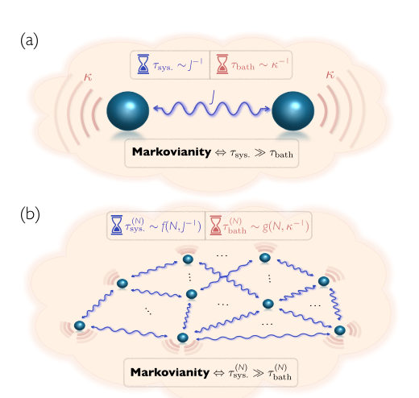
<figcaption class="paper-figure-caption"><b>Fig 1.</b> FIG. 1. Markov approximation in many-body systems. (a) In bipartite systems, the relevant timescales for the Markov approximation to be valid are readily identified. The rele- vant system timescale is determined by the interaction rate between the particles, J, and the relevant environmental timescale by how fast bath correlations are erased, κ. (b) For N particles, the relevant timescales are less obvious. Both timescales are still determined by the microscopic rates but can also be modified by system size.</figcaption>
</figure>
<figure class="paper-figure-card">
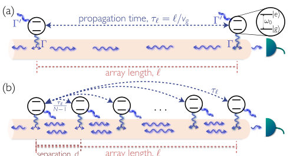
<figcaption class="paper-figure-caption"><b>Fig 2.</b> FIG. 2. Setup. (a) two to (b) N emitters coupled to a waveg- uide spaced evenly at k0d = 2πq with total length ℓand thus total propagation time τl = ℓ/vg, where vg is the group veloc- ity. Each emitter is coupled to the waveguide at rate Γ and to free space at rate Γ′.</figcaption>
</figure>
<figure class="paper-figure-card">
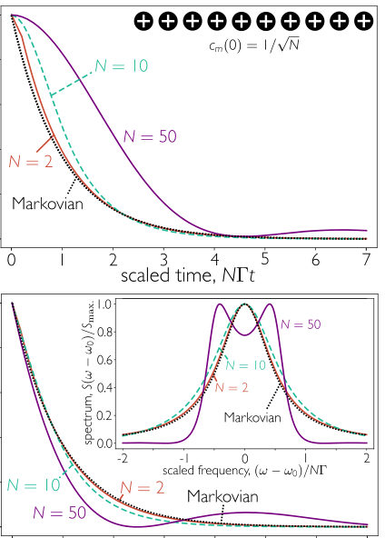
<figcaption class="paper-figure-caption"><b>Fig 3.</b> FIG. 3. Emergent non-Markovian dynamics for superradi- ant states. (a) Time evolution of total emitter population, PN m=1 |cm(t)|2, for different emitter numbers. (b) Intensity registered by a photon detector at the position of the right- most emitter, offset by the delay time, for different emitter numbers. (inset) Power spectrum of the emitted light, nor- malized by the maximum spectral weight, for different emit- ter numbers. In all plots, the dotted black line represents the N-independent Markovian limit, and simulations use a total end-to-end delay of Γℓ/vg = 0.1 and an initial single- excitation superradiant state |ψ(t = 0)⟩= ˆS+ |g⟩⊗N / √</figcaption>
</figure>
<figure class="paper-figure-card">
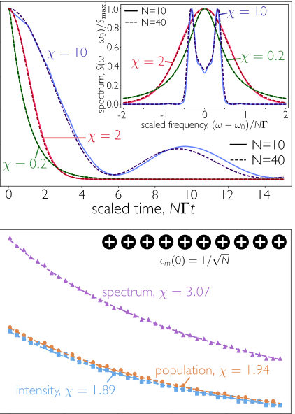
<figcaption class="paper-figure-caption"><b>Fig 4.</b> FIG. 4. Extracting relevant timescales for Markovianity. (a) Time evolution of total emitter population, PN m=1 |cm(t)|2, for different values of χ = NΓℓ/vg with N = 10 (solid lines) and N = 40 (dashed). (inset) Power spectrum of the emit- ted light, normalized by the maximum spectral weight, for different values of χ with N = 10 (solid lines) and N = 40 (dashed). (b) Minimum emitter number for which certain features appear at fixed end-to-end delay. These features are two peaks in the spectrum (purple triangles), revivals in the emitted intensity (blue squares), and revivals in the emitter population (orange circles). All datasets are fitted to lines of constant χ (dashed lines). Both...</figcaption>
</figure>
<figure class="paper-figure-card">
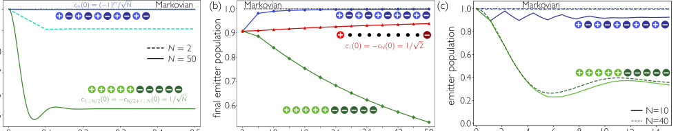
<figcaption class="paper-figure-caption"><b>Fig 5.</b> FIG. 5. Emergent non-Markovian dynamics for subradiant states. (a) Time evolution of total emitter popula- tion, PN m=1 |cm(t)|2, for different subradiant states. The initial state has equal amplitude on all emitters with (green)</figcaption>
</figure>
</div>

<p><strong>Summary.</strong> This paper investigates non-Markovian dynamics in a system of emitters coupled to a time-delayed waveguide. By analyzing the collective behavior in the large emitter limit, the authors show that memory effects become dominant, causing deviations from simple exponential decay. The findings emphasize the critical need for careful consideration of relevant timescales when applying the Markov approximation in complex quantum many-body systems.</p>
<p><strong>Why it may be interesting.</strong> This work provides concrete theoretical examples of how memory effects, arising from system geometry and collective coupling, invalidate standard approximations in quantum optics, which is crucial for designing scalable quantum devices.</p>
<details>
<summary>Detailed structure</summary>
<p><strong>Main problem.</strong> The paper addresses the failure of the Markov approximation in open quantum systems, particularly in complex, many-body settings where environmental memory effects are significant.</p>
<p><strong>Main result.</strong> Collective effects in time-delayed waveguide QED can induce non-Markovian dynamics, with the dynamics being governed by an emergent parameter $\chi$ that combines system and environmental timescales.</p>
<p><strong>Method.</strong> The analysis involves deriving and solving delayed differential equations for emitter amplitudes, comparing results against the Markov approximation, and analyzing the system in the large-$N$ limit.</p>
<p><strong>Model / system.</strong> The system is a time-delayed waveguide Quantum Electrodynamics (wQED) setup consisting of $N$ two-level emitters coupled to a one-dimensional waveguide. The dynamics are modeled using delayed differential equations.</p>
<p><strong>Key observables.</strong> Total emitter population, emitted intensity, and the finite-time power spectrum of the emitted field.</p>
<p><strong>Important parameters / regimes.</strong> The emergent parameter $\chi \equiv N\Gamma\ell/v_g$, the superradiant lifetime, and the end-to-end delay time $   au_\ell$.</p>
<p><strong>Assumptions / limitations.</strong> The analysis often assumes a phase-matched geometry and focuses on the single-excitation sector, though it explores deviations from these assumptions.</p>
<p><strong>Figures summary.</strong> Figures illustrate the time evolution of total population and emitted intensity, showing deviations from the Markovian limit at large $N$, and demonstrate the dependence of dynamics on the parameter $\chi$.</p>
<p><strong>Paper structure.</strong> The paper progresses by establishing the physical model, deriving the governing equations, analyzing the breakdown of the Markov approximation through varying $N$, and finally characterizing the emergent non-Markovian dynamics using the collective parameter $\chi$.</p>
</details>
<details>
<summary>Abstract</summary>
<p>Quantum systems are invariably coupled to a surrounding environment. A common theoretical method to simplify the problem is to trace over the environment under a Markov approximation, which assumes that the environment holds no memory over the timescales that the system evolves under. In interacting many-body systems, it is often not trivial to extract which of the multiple collective timescales are relevant. We consider a time-delayed waveguide QED setup with a single excitation. By fixing the maximum propagation time and increasing the number of emitters, we show that, even for small delay times, collective effects are sufficient to cause non-Markovianity. The impact of memory is intrinsically state-dependent. For superradiant states, the relevant system timescale is the superradiant lifetime while the relevant bath timescale is the end-to-end delay time. For subradiant states, both timescales depend on the structure of the specific state. Our results demonstrate the importance of prudently making Markov approximations in quantum many-body systems, and highlight potential pitfalls to avoid in scaling up quantum devices to large system sizes.</p>
</details>
<p><sub><a href="#top">↑ back to top</a></sub></p>

<p><a id="paper-2608.27132"></a></p>
<h3 id="programmable-cavity-squeezing-for-distributed-sensing-in-a-tweezer-array"><a href="http://arxiv.org/abs/2608.27132v1">Programmable Cavity Squeezing for Distributed Sensing in a Tweezer Array</a></h3>
<p><strong>Authors:</strong> Youssef Trifa, Marco Fattori, Luca Pezzè<br>
<strong>Type:</strong> theory · <strong>Category:</strong> other · <strong>PDF:</strong> <a href="https://arxiv.org/pdf/2608.27132v1">https://arxiv.org/pdf/2608.27132v1</a><br>
<strong>Analysis basis:</strong> full PDF text, analyzed in chunks
<strong>Topic relevance:</strong> 🔥 <code>Tavis-Cummings &amp; cavity-many-emitter</code> <strong>4/5</strong> · <code>Rydberg arrays</code> <strong>3/5</strong> · <code>analog quantum simulation</code> <strong>3/5</strong> · <code>Keldysh / 2PI / non-Gaussian methods</code> <strong>2/5</strong> · <code>methods for driven-dissipative</code> <strong>2/5</strong> · <code>correlated / nonlocal dissipation</code> <strong>1/5</strong> · <code>interference shaping light</code> <strong>1/5</strong></p>
<div class="figure-strip-hint">↔ Scroll figures horizontally</div>
<div class="paper-figures-scroll">
<figure class="paper-figure-card">
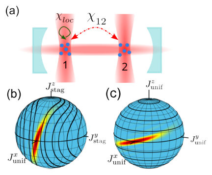
<figcaption class="paper-figure-caption"><b>Fig 1.</b> FIG. 1. Geometric configuration of the system studied: two atomic clouds are trapped within an optical cavity. We approximate each atom as a two-level system, and construct spin operators for each cloud. Local and long-range interactions lead to the Hamiltonian de- scribed in Eq. 1 for M = 2. (b-c) Wigner distribution of the evolved state after a quench protocol from a coherent spin state along x with (b) χ12 = −2χloc and (c) χ12 = 2χloc, with N1 = N2 = 20 atoms in each cloud. Black lines indicates the semiclassical trajectories, see main text for more details. Note that in (b) the axes correspond to the staggered collective spin -one of its components being uniform to ensure standard spin...</figcaption>
</figure>
<figure class="paper-figure-card">
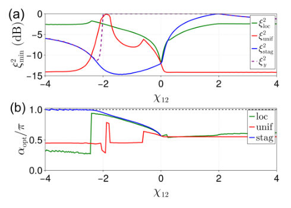
<figcaption class="paper-figure-caption"><b>Fig 2.</b> FIG. 2. (a) Minimal collective (red uniform, blue staggered) and lo- cal (green) squeezing achieved in time versus χ12, with χloc = 1. The dashed purple line corresponds to the staggered squeezing along the fixed y direction. (b) Squeezing angle αopt at the time of the min- imum for different values of χ12. The dashed line corresponds to α = π. Here, we took N1 = N2 = 100. The squeezing angle for uni- form squeezing for χ12 around −1.5 displays large fluctuations which are due to the very small amount of uniform squeezing for these val- ues of χ12 and are not physically relevant. For similar reasons, we did not show αopt for the staggered squeezing for positive χ12.</figcaption>
</figure>
<figure class="paper-figure-card">
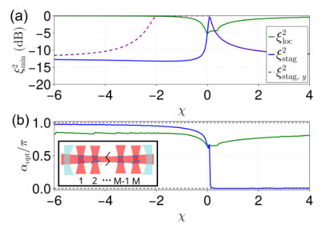
<figcaption class="paper-figure-caption"><b>Fig 3.</b> FIG. 3. (a) Minimal collective staggered (blue) and local (green) squeezing achieved in time for different values of χ with χloc = 1. The dashed purple line corresponds to the staggered squeezing along the fixed y direction. (b) Squeezing angle αopt at the time of the minimum for different values of χ. In both figures (a, b) we took N = 10 and M = 20. The black dashed lines correspond to 0 and π. Inset: schematic of the system with M tweezers.</figcaption>
</figure>
<figure class="paper-figure-card">
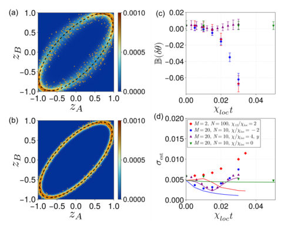
<figcaption class="paper-figure-caption"><b>Fig 4.</b> FIG. 4. Ellipse fitting from 1000 points sampled from the distri- bution ¯P  mA z , mB z , χloct = 0.01, π/4  for (a) a collective uniform OAT dynamics (χloc = 1, χ12 = 2, M = 2 and N = 100) and (b) a stag- gered squeezed state (M = 20, N = 10, χ/χloc = 4, without local ro- tation to change the squeezing direction). We note z j = 4mj z/(MN), j = A, B. The black dashed ellipse is obtained with a non linear ge- ometric fit. (c) Time evolution of the bias and (d) standard deviation of the estimator for the different Hamiltonian parameters. The solid lines correspond to the Cram`er-Rao bound, computed from the clas- sical Fisher information of the density probability ¯P.</figcaption>
</figure>
<figure class="paper-figure-card">
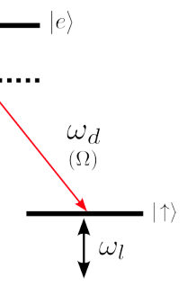
<figcaption class="paper-figure-caption"><b>Fig 5.</b> FIG. 5. Schematic of the three levels and atomic transitions used to engineer the cavity Hamiltonian.</figcaption>
</figure>
</div>

<p><strong>Summary.</strong> This paper demonstrates how to use programmable cavity interactions in a tweezer array to generate tailored quantum entanglement for distributed sensing. By tuning the competition between local and inter-cloud couplings, researchers can generate strong, nonlocal squeezing in a specific spatial mode. This technique successfully reduces phase uncertainty below the Standard Quantum Limit for differential interferometry.</p>
<p><strong>Why it may be interesting.</strong> This work provides a detailed theoretical blueprint for engineering specific, non-local quantum correlations in an atomic array using cavity QED, which is highly relevant for quantum sensing and metrology.</p>
<details>
<summary>Detailed structure</summary>
<p><strong>Main problem.</strong> The primary goal is to overcome the limitation of using uncorrelated devices in field sensing by engineering quantum correlations (entanglement) among spatially-separated devices using distributed sensing protocols.</p>
<p><strong>Main result.</strong> Programmable cavity interactions allow generating nonlocal squeezing tailored to specific sensing tasks, enabling phase uncertainty reduction below the Standard Quantum Limit in differential Ramsey interferometry.</p>
<p><strong>Method.</strong> The analysis involves modeling the system dynamics using an XY-exchange Hamiltonian supplemented by local nonlinearities, employing semiclassical analysis, and utilizing the Truncated Cumulant Expansion (TCE) for large systems.</p>
<p><strong>Model / system.</strong> The physical platform is a tweezer array of M atomic ensembles trapped in a common optical cavity. The dynamics are governed by tunable cavity-mediated interactions ($\chi_{ij}$) competing with local interactions ($\chi_{	ext{loc}}$).</p>
<p><strong>Key observables.</strong> Squeezing parameters ($\xi^2_{	ext{unif}}$, $\xi^2_{	ext{stag}}$), phase uncertainty, and the ratio R used to check for Heisenberg-Robertson inequality violation.</p>
<p><strong>Important parameters / regimes.</strong> The coupling ratio ($\chi_{12}$ vs $\chi_{	ext{loc}}$) is crucial; negative coupling ($\chi_{12} = -2\chi_{	ext{loc}}$) is shown to generate strong nonlocal squeezing.</p>
<p><strong>Assumptions / limitations.</strong> The analysis relies on the assumption of equal atom numbers ($N_j = N$) and utilizes the Truncated Cumulant Expansion (TCE) method, which assumes higher-order cumulants are negligible.</p>
<p><strong>Figures summary.</strong> Figures illustrate the Wigner distribution for different coupling regimes (uniform vs. staggered squeezing) and show the evolution of squeezing parameters and the ratio R for varying system sizes and coupling strengths.</p>
<p><strong>Paper structure.</strong> The paper progresses from establishing the need for distributed sensing to deriving the effective Hamiltonian, analyzing the competition between local and inter-cloud couplings to select the squeezing mode, and finally applying the scheme to differential Ramsey interferometry.</p>
</details>
<details>
<summary>Abstract</summary>
<p>Field sensing with state-of-the-art atom interferometers is restricted to the use of uncorrelated devices op- erating in parallel. We can overcome this limitation by using distributed sensing protocols where quantum correlations among spatially-separated devices are engineered in the spatial mode carrying the signal. We show that a tweezer array in a cavity offers an ideal testbed to engineer quantum states for distributed sensing, with the possibility to generate entanglement both within and between the clouds. The competition between local and intercloud cavity-mediated exchange allows the sign and spatial pattern of the intercloud couplings to select the squeezed mode. For two ensembles, positive coupling produces uniform collective squeezing, whereas negative coupling generates strong staggered, nonlocal squeezing. A semiclassical analysis reveals a counter-twisting- like phase-space flow, qualitatively distinct from standard one-axis twisting. The analysis and results can be further generalized to a larger number of ensembles. We apply the scheme to differential Ramsey interferometry with common phase noise spanning the full 2 πrange, the resulting staggered states reduce the phase uncertainty below the standard quantum limit, with an ellipse estimator approaching the Cramèr-Rao bound. These results establish programmable cavity interactions as a scalable route to entanglement tailored to distributed signals.</p>
</details>
<p><sub><a href="#top">↑ back to top</a></sub></p>

<p><a id="paper-2608.26919"></a></p>
<h3 id="quenched-activity-induces-nonuniversal-scaling-in-nonreciprocal-xy-models-and-surfaces"><a href="http://arxiv.org/abs/2608.26919v1">Quenched activity induces nonuniversal scaling in nonreciprocal XY Models and surfaces</a></h3>
<p><strong>Authors:</strong> Sudip Mukherjee, Abhik Basu<br>
<strong>Type:</strong> theory · <strong>Category:</strong> statistical mechanics · <strong>PDF:</strong> <a href="https://arxiv.org/pdf/2608.26919v1">https://arxiv.org/pdf/2608.26919v1</a><br>
<strong>Analysis basis:</strong> full PDF text, analyzed in chunks
<strong>Topic relevance:</strong> 🔥 <code>non-equilibrium universality</code> <strong>4/5</strong> · <code>driven-dissipative phase transition</code> <strong>3/5</strong> · <code>Keldysh / 2PI / non-Gaussian methods</code> <strong>2/5</strong> · <code>methods for driven-dissipative</code> <strong>2/5</strong> · <code>Frenkel-Kontorova</code> <strong>1/5</strong> · <code>correlated / nonlocal dissipation</code> <strong>1/5</strong></p>
<div class="figure-strip-hint">↔ Scroll figures horizontally</div>
<div class="paper-figures-scroll">
<figure class="paper-figure-card">
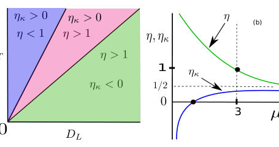
<figcaption class="paper-figure-caption"><b>Fig 1.</b> FIG. 1: (left)Phase diagram of the model in the DL −DT plane. The blue region with η &lt; 1, ηκ &gt; 0 has strong quasi- ordered phase and logarithmically faster than diffusive dy- namics, the pink region with η &gt; 1, ηκ &gt; 0 has weak quasi- ordered phase and logarithmically faster than diffusive dy- namics, and the green region with η &lt; 1, ηκ &lt; 0 has weak quasi-ordered phase and logarithmically slower than diffusive dynamics. We conjecture that the phases in the pink and green regions will be destroyed by vortex proliferation in the 2D NRB XY model. See text. (right) Variation of the expo- nents η (green) ηκ (blue) with µ. Both η, ηκ approach 1/2 for µ →∞(horizontal broken line). Black dots...</figcaption>
</figure>
<figure class="paper-figure-card">
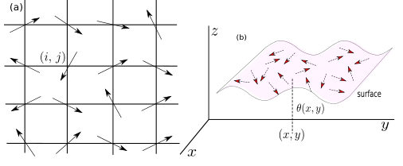
<figcaption class="paper-figure-caption"><b>Fig 2.</b> FIG. 2: (a) 2D NRB XY model on a square lattice. (b) An active surface in the Monge gauge coupled with quenched random tangential velocities represented by the arrows.</figcaption>
</figure>
<figure class="paper-figure-card">
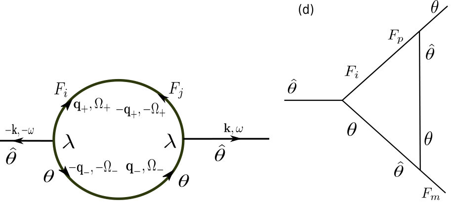
<figcaption class="paper-figure-caption"><b>Fig 3.</b> FIG. 3: Feynman graphs for (a) Tree-level vertex, (b) one-loop propagator, (c) one-loop correlator, (d) one-loop vertex.</figcaption>
</figure>
</div>

<p><strong>Summary.</strong> This paper demonstrates that the hydrodynamic description for a nonreciprocal XY model and an active surface advected by quenched disorder are mathematically identical. Using Renormalization Group theory, the authors predict that the resulting phase order is nonuniversal, depending continuously on the disorder characteristics. This provides a unified theoretical framework for studying non-equilibrium ordering in both condensed matter and active matter physics.</p>
<p><strong>Why it may be interesting.</strong> The connection between non-equilibrium active matter (surfaces) and classical statistical mechanics models (XY model) via a shared hydrodynamic equation is highly relevant for understanding non-equilibrium phase transitions in complex physical systems.</p>
<details>
<summary>Detailed structure</summary>
<p><strong>Main problem.</strong> The paper investigates the scaling behavior and phase order in nonreciprocal, non-equilibrium systems by establishing an equivalence between two distinct physical models.</p>
<p><strong>Main result.</strong> The theory predicts that both systems exhibit nonuniversal scaling exponents, allowing for phase order that can be stronger or weaker than the quasi-long-range order characteristic of the standard 2D XY model.</p>
<p><strong>Method.</strong> The analysis relies on deriving and analyzing a common hydrodynamic equation for both systems, followed by applying perturbative Dynamic Renormalization Group (RG) techniques.</p>
<p><strong>Model / system.</strong> The models include a 2D Nonreciprocal Random Bond XY Model (NRB XY model) and an active surface advected by quenched velocities. Both are governed by a continuum hydrodynamic equation involving spin stiffness, random disorder fields, and coupling constants.</p>
<p><strong>Key observables.</strong> Phase order (XY model) and positional order (active surface); scaling exponents ($\eta, \eta_\kappa$); correlation functions $\langle|	heta(\mathbf{k}, t)|^2
angle$.</p>
<p><strong>Important parameters / regimes.</strong> Disorder variance transversality; coupling constants ($\kappa, \lambda$); disorder ratios ($\mu = D_T / D_L$).</p>
<p><strong>Assumptions / limitations.</strong> The derivation uses continuum limit approximations, assumes rotational invariance in 2D, and employs perturbative RG techniques.</p>
<p><strong>Figures summary.</strong> Figure 1 shows the phase diagram in the $D_L - D_T$ plane mapping regions based on scaling exponents. Figure 2 illustrates the setup for both the 2D NRB XY model on a lattice and the active surface in the Monge gauge.</p>
<p><strong>Paper structure.</strong> The paper first establishes the equivalence between the microscopic dynamics of the XY model and the continuum equation for the active surface. It then uses continuum approximations and RG methods to calculate the scaling exponents and analyze the resulting phase transitions and ordering properties.</p>
</details>
<details>
<summary>Abstract</summary>
<p>Active XY models and active surfaces are two paradigmatic nonequilibrium systems with distinct microscopic origins. We show that the hydrodynamic theories for a quenched-disordered nonreciprocal random bond two-dimensional XY model and an inversion-symmetric active surface tangentially advected by quenched velocities are identical. This theory predicts sub-logarithmic phase order in the XY model and sub- or super-logarithmic positional order in the surface for short-range disorder with nonuniversal exponents, which vary continuously with the degree of transversality of the disorder variance. We argue that the nonreciprocal random bond XY model can disorder through vortex proliferation.</p>
</details>
<p><sub><a href="#top">↑ back to top</a></sub></p>

<p><a id="paper-2608.27090"></a></p>
<h3 id="localization-delocalization-transition-in-diffusion-with-adaptive-resetting"><a href="http://arxiv.org/abs/2608.27090v1">Localization Delocalization Transition in Diffusion with Adaptive Resetting</a></h3>
<p><strong>Authors:</strong> Tommer D. Keidar, Shlomi Reuveni<br>
<strong>Type:</strong> theory · <strong>Category:</strong> statistical mechanics · <strong>PDF:</strong> <a href="https://arxiv.org/pdf/2608.27090v1">https://arxiv.org/pdf/2608.27090v1</a><br>
<strong>Analysis basis:</strong> full PDF text, analyzed in chunks
<strong>Topic relevance:</strong> 🔥 <code>non-equilibrium universality</code> <strong>4/5</strong> · <code>driven-dissipative phase transition</code> <strong>3/5</strong> · <code>methods for driven-dissipative</code> <strong>2/5</strong> · <code>Keldysh / 2PI / non-Gaussian methods</code> <strong>1/5</strong> · <code>analog quantum simulation</code> <strong>1/5</strong> · <code>correlated / nonlocal dissipation</code> <strong>1/5</strong></p>
<div class="figure-strip-hint">↔ Scroll figures horizontally</div>
<div class="paper-figures-scroll">
<figure class="paper-figure-card">
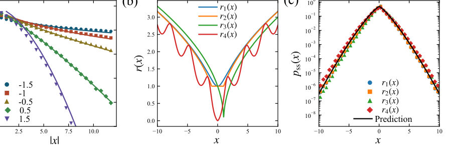
<figcaption class="paper-figure-caption"><b>Fig 1.</b> FIG. 1. a. The NESS of diffusion (D = 1) under adaptive resetting with the power-law asymptotics of Eq. (3). Symbols are numerical evaluations, and solid lines are the theoretical predictions of Eqs. (5) and (7). The resetting rates used are r(x) = |x|λ for λ &gt; 0 and r(x) = (0.5+|x|)λ for λ &lt; 0, with λ ∈{−1.5, −1, 0.5, 1.5}. b. Four different resetting rates with the same power-law asymptotics of r(x) ∼|x|0.5. The resetting rates are: r1(x) = (1 + x2)1/4, r2(x) = Θ(1 −|x|) + √xΘ(|x| −1) where Θ(·) is Heavyside step function, r3(x) = p</figcaption>
</figure>
<figure class="paper-figure-card">
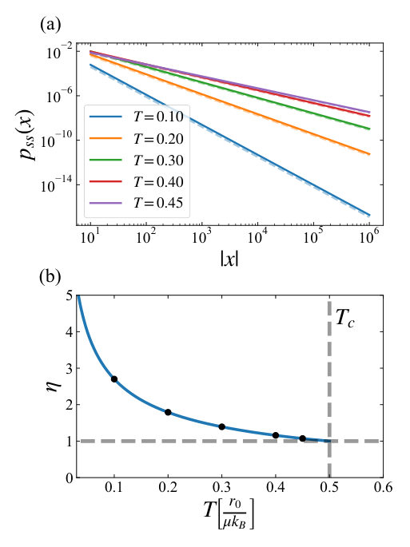
<figcaption class="paper-figure-caption"><b>Fig 2.</b> FIG. 2. (a) The NESS solution of Eq. (2) with r(x) = (1 + x2)−1 for different temperatures. The solid line comes from a numerical solution of the equation, and dashed lines are given by Eqs. (9) and (10). Temperature is measured in r0/(µkB). (b) Plot of Eq. (10). Dots come from a fit to the steady state found numerically for the five temperatures presented in panel (a).</figcaption>
</figure>
<figure class="paper-figure-card">
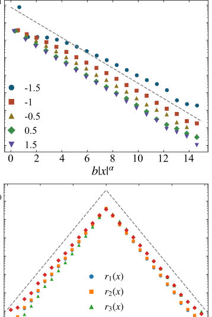
<figcaption class="paper-figure-caption"><b>Fig 3.</b> FIG. 3. a The NESS presented in Fig. 1(a). b The NESS presented in Fig. 1(c). In both cases the y-axis is logarithmic and the x-axis was taken as b|x|α where b and α are given by Eq. (7). All simulation parameters are the same as for Fig. 1(a, c) except for the trajectory length which was here chosen to be 3 · 104. Dashed lines with slope −sgn(x) are added to show the agreement between theory and simulations.</figcaption>
</figure>
</div>

<p><strong>Summary.</strong> This theoretical paper classifies diffusion under spatially dependent stochastic resetting by analyzing the resulting non-equilibrium steady state (NESS). It establishes a critical scaling exponent $\lambda = -2$, which separates localized diffusion (stretched-exponential tails) from a new, power-law decaying regime. This marginal case provides a nonequilibrium analogue to temperature-driven delocalization seen in equilibrium statistical mechanics.</p>
<p><strong>Why it may be interesting.</strong> The work provides a rigorous, non-equilibrium framework for understanding localization transitions, drawing direct analogies between quantum/classical confinement potentials and stochastic resetting mechanisms, which is relevant for open quantum systems dynamics.</p>
<details>
<summary>Detailed structure</summary>
<p><strong>Main problem.</strong> The paper aims to establish a general classification for diffusion under adaptive resetting, determining the nature of the non-equilibrium steady state (NESS) based on the spatial dependence of the resetting rate $r(x)$.</p>
<p><strong>Main result.</strong> A sharp threshold exists at $r(x) \sim |x|^{-2}$; for stronger resetting ($\lambda > -2$), the state is localized with stretched-exponential tails, while the marginal case ($\lambda = -2$) yields a power-law tail, establishing a nonequilibrium counterpart to equilibrium delocalization.</p>
<p><strong>Method.</strong> The analysis involves solving the governing ordinary differential equation for the NESS using analytical ansatz solutions (stretched-exponential and power-law forms) and comparing these results to numerical simulations.</p>
<p><strong>Model / system.</strong> The model describes a particle undergoing diffusion (with coefficient $D$) subjected to an adaptive resetting rate $r(x)$ that scales as a power law, $r(x) \sim |x|^\lambda$. The system is analyzed by examining the steady-state probability distribution $p(x)$.</p>
<p><strong>Key observables.</strong> The asymptotic decay exponent ($\eta$ or $\alpha$) of the NESS tails, and the critical temperature ($T_c$) marking the delocalization transition.</p>
<p><strong>Important parameters / regimes.</strong> The exponent $\lambda$ characterizing the resetting rate $r(x) \sim |x|^\lambda$, and the ratio $r_0/D$ which determines the transition point.</p>
<p><strong>Assumptions / limitations.</strong> The analysis assumes the resetting rate $r(x)$ follows a power-law asymptotic form, $r(x) \simeq r_0|x|^\lambda$ for large $|x|$.</p>
<p><strong>Figures summary.</strong> Figure 1 compares the NESS under different $\lambda$ values, showing stretched-exponential decay for $\lambda > 0$ and illustrating the theoretical fit to the derived asymptotics.</p>
<p><strong>Paper structure.</strong> The paper systematically analyzes the governing ODE for the NESS under adaptive resetting, deriving explicit forms for the steady-state tails in the localized ($\lambda > -2$) and marginal ($\lambda = -2$) regimes, drawing parallels to equilibrium potential theory.</p>
</details>
<details>
<summary>Abstract</summary>
<p>Stochastic resetting can localize diffusion and generate nonequilibrium steady states, but the conditions under which spatially dependent resetting produces localization remain unclear. Here, we establish a general classification for diffusion under adaptive resetting, where the resetting rate $r(x)$ depends on position. For rates with the asymptotic scaling $r(x)\sim |x|^λ$, we identify a sharp threshold at $λ=-2$. For $λ>-2$, the steady state is localized and exhibits stretched-exponential tails, whereas for $λ<-2$, resetting is asymptotically too weak to localize the particle. Precisely at the marginal scaling $r(x)\sim |x|^{-2}$, a qualitatively new regime emerges: the steady state develops power-law tails with a temperature-dependent exponent and exhibits a finite-temperature delocalization transition. Thus, inverse-square resetting plays the role of the logarithmic potential in equilibrium, establishing a nonequilibrium counterpart of the temperature-driven delocalization seen there.</p>
</details>
<p><sub><a href="#top">↑ back to top</a></sub></p>

<p><a id="paper-2608.26778"></a></p>
<h3 id="observing-relativistic-trajectories-of-single-photons"><a href="http://arxiv.org/abs/2608.26778v1">Observing relativistic trajectories of single photons</a></h3>
<p><strong>Authors:</strong> Sayantan Das, Daniel S. Dahl, Daniel Peace, Marcelo P. Almeida, Abhishek Roy, Markus Rambach, Andrew G. White, Timothy C. Ralph, Jacquiline Romero<br>
<strong>Type:</strong> experiment · <strong>Category:</strong> other · <strong>PDF:</strong> <a href="https://arxiv.org/pdf/2608.26778v1">https://arxiv.org/pdf/2608.26778v1</a><br>
<strong>Analysis basis:</strong> full PDF text, analyzed in chunks
<strong>Topic relevance:</strong> 🔥 <code>quantum measurements</code> <strong>4/5</strong> · 🔥 <code>quantum optics experiment</code> <strong>4/5</strong> · <code>interference shaping light</code> <strong>3/5</strong></p>
<div class="figure-strip-hint">↔ Scroll figures horizontally</div>
<div class="paper-figures-scroll">
<figure class="paper-figure-card">
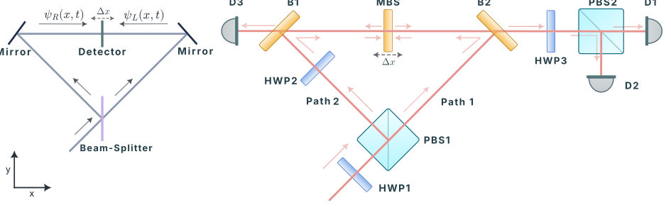
<figcaption class="paper-figure-caption"><b>Fig 1.</b> FIG. 1. Conceptual and experimental schematic. (A) Conceptual setup of the Michelson-Sagnac interferometer consisting of the beam-splitter in purple and the mirrors in black. The detector in dark grey measures the weak value of momentum ⟨ˆkx⟩w, at different positions x, allowing the determination of the relativistic Bohmian trajectories of a single photon which is in a superposition of a right-moving wavefunction ψR(x, t) and a left-moving wavefunction ψL(x, t). (B) The schematic of the Michelson-Sagnac interferometer used to implement the conceptual setup. It consists of polarising beam-splitters PBS1 and PBS2 in cyan, half-waveplates HWP1, HWP2, and HWP3 in blue, plate beam-splitters B1,...</figcaption>
</figure>
<figure class="paper-figure-card">
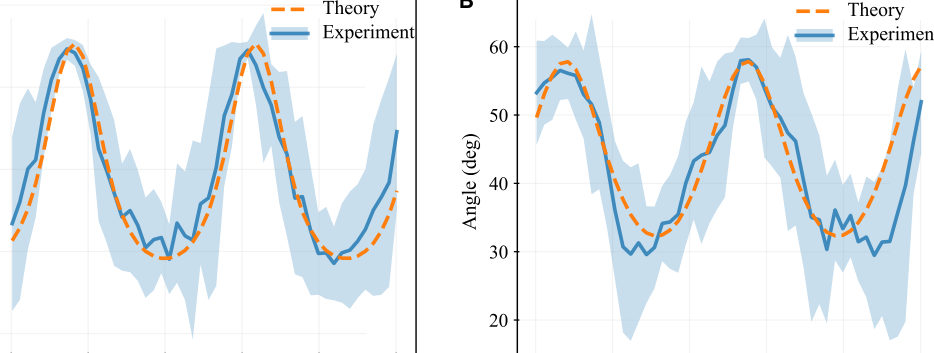
<figcaption class="paper-figure-caption"><b>Fig 2.</b> FIG. 2. Velocity-vector-angles as a function of MBS position. (A) and (B) illustrates experimental velocity-vector-angles compared with the theory as a function of MBS position for 20-80 and 5-95 intensity splitting ratios in the interferometer, respectively. The theoretical plot is shown in dashed orange lines and the experimental data are shown in blue solid lines with blue shaded region of uncertainty by ± 1 standard deviation.</figcaption>
</figure>
<figure class="paper-figure-card">
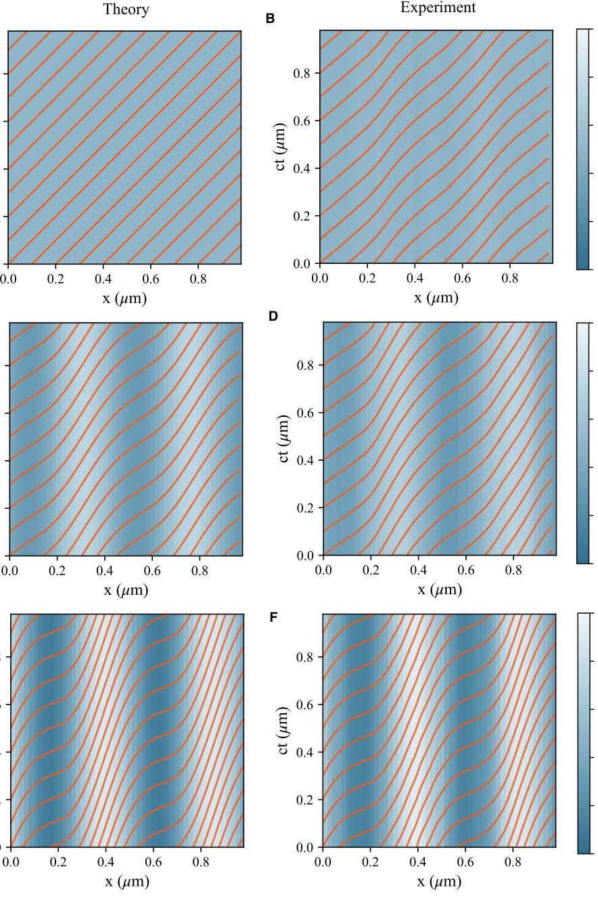
<figcaption class="paper-figure-caption"><b>Fig 3.</b> FIG. 3. Theoretical and experimental relativistic Bohmian trajectories overlaid on the probability densities. (A), (C), and (E) show the theoretical trajectories in dark orange on the theoretical probability densities. (B), (D), and (F) illustrate the experimental trajectories in dark orange on the experimental probability densities. The common colourmap for the probability densities are shown to the right of each row.</figcaption>
</figure>
</div>

<p><strong>Summary.</strong> This paper experimentally investigates relativistic Bohmian mechanics by measuring the trajectory of a single photon in a Michelson-Sagnac interferometer. By weakly measuring path information, the authors reconstruct the Bohmian velocity, observing characteristic subluminal and superluminal deviations from the speed of light. This provides novel experimental access to the deterministic, yet counterintuitive, predictions of Bohmian theory in a relativistic context.</p>
<p><strong>Why it may be interesting.</strong> This work provides a direct, experimental test of a non-standard interpretation of quantum mechanics (Bohmian mechanics) in a relativistic setting, which is highly relevant to foundational quantum physics and quantum optics.</p>
<details>
<summary>Detailed structure</summary>
<p><strong>Main problem.</strong> The paper addresses the challenge of reconciling Bohmian mechanics, which posits definite particle trajectories, with the principles of special relativity, specifically by experimentally reconstructing the relativistic Bohmian trajectory of a single photon.</p>
<p><strong>Main result.</strong> The experiment successfully observed subluminal and superluminal features in the reconstructed Bohmian trajectories as the photon passes through interference fringes, confirming predictions of relativistic Bohmian theory.</p>
<p><strong>Method.</strong> The measurement protocol involves weakly measuring 'which-path' information in a Michelson-Sagnac interferometer using the photon's polarization degree of freedom to reconstruct the relativistic Bohmian velocity $v(x)$.</p>
<p><strong>Model / system.</strong> The physical system is a single photon propagating through a Michelson-Sagnac interferometer. The theoretical framework is relativistic Bohmian mechanics, which predicts the velocity $v(x) = j_x/
ho$ based on the probability current and density.</p>
<p><strong>Key observables.</strong> The primary observable is the relativistic Bohmian velocity $v(x)$, which is reconstructed from the ratio of average photon counts ($\langle\hat{N}_1 - \hat{N}_2
angle / \langle\hat{N}_1 + \hat{N}_2
angle$).</p>
<p><strong>Important parameters / regimes.</strong> The key parameters include the amplitude splitting ratio $\eta$ (or related $\delta$), the relative phase $\phi(x)$, and the measurement beam-splitter position $x$.</p>
<p><strong>Assumptions / limitations.</strong> The analysis assumes natural units ($c = \hbar = 1$), utilizes the optical approximation, and relies on the assumption that all particles passing through a point follow the same deterministic trajectory.</p>
<p><strong>Figures summary.</strong> Figure 1 illustrates the conceptual setup for head-on interference. Figure 2 shows the velocity-vector-angle $\chi$ vs. MBS position for varying splitting ratios. Figure 3 compares theoretical and experimental trajectories overlaid on probability densities, demonstrating the curvature of the path.</p>
<p><strong>Paper structure.</strong> The paper first introduces the theoretical necessity of reconciling Bohmian mechanics with relativity. It then details the experimental platform using a Michelson-Sagnac interferometer and weak measurement techniques. Finally, it presents the quantitative results, comparing the measured velocity profile to the theoretical predictions, highlighting the subluminal/superluminal features.</p>
</details>
<details>
<summary>Abstract</summary>
<p>While the standard interpretation of quantum mechanics does not assign definite trajectories to particles, the Bohmian interpretation does. Only recently has an operational method for reconciling Bohmian mechanics with relativity been proposed. Here, we experimentally reconstruct relativistic Bohmian trajectories of a single photon in a Michelson-Sagnac interferometer, where counter-propagating probability amplitudes interfere head-on at the speed of light. As predicted by the relativistic Bohmian theory, we observe subluminal and superluminal features of the Bohmian trajectories of the photon traversing through the fringes. Our work provides experimental access to relativistic Bohmian mechanics and enables exploration of its unusual and counterintuitive properties.</p>
</details>
<p><sub><a href="#top">↑ back to top</a></sub></p>

<p><a id="paper-2608.27281"></a></p>
<h3 id="efficient-formation-and-identification-of-single-emitters-in-4h-sic-following-maskless-heavy-ion-implantation"><a href="http://arxiv.org/abs/2608.27281v1">Efficient formation and identification of single emitters in 4H-SiC following maskless heavy ion implantation</a></h3>
<p><strong>Authors:</strong> S. Eserin, L. K. S. Zimmermann, E. Schneider, M. Ludlow, J. Heiler, O. G. Lloyd-Willard, K. Stockbridge, G. Aresta, L. Antwis, S. K. Clowes, M. Hofmann, S. Kucera, P. Berwian, F. Kaiser, B. N. Murdin<br>
<strong>Type:</strong> experiment · <strong>Category:</strong> quantum information and computing · <strong>PDF:</strong> <a href="https://arxiv.org/pdf/2608.27281v1">https://arxiv.org/pdf/2608.27281v1</a><br>
<strong>Analysis basis:</strong> full PDF text, analyzed in chunks
<strong>Topic relevance:</strong> 🔥 <code>QC/QI experiment</code> <strong>4/5</strong> · <code>quantum optics experiment</code> <strong>3/5</strong> · <code>quantum measurements</code> <strong>2/5</strong></p>
<div class="figure-strip-hint">↔ Scroll figures horizontally</div>
<div class="paper-figures-scroll">
<figure class="paper-figure-card">
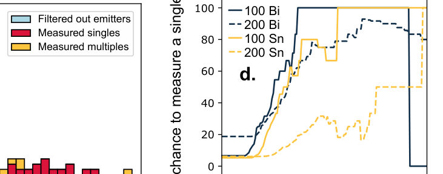
<figcaption class="paper-figure-caption"><b>Fig 1.</b> Figure 1: a. Confocal photoluminescence map of a Bi2+ array, implanted with 200 ions/spot and annealed at 900 ◦C, under 5 mW of 940 nm off-resonant excitation. Red circles indicate confirmed single emitters, yellow circles indicate multiple emitters, and light blue circles are filtered-out implants due to a combination of count rate/spot shape. b. Deviations of the fitted single-emitter positions from the idealised grid for the array in (a), showing an RMS displacement of 146 nm. c. Histogram of intensities for all fitted emitter locations for the array in (a). d. Percentage change to measure a single emitter as a function of intensity threshold, shown here for Bi2+ and Sn2+ (blue and...</figcaption>
</figure>
<figure class="paper-figure-card">
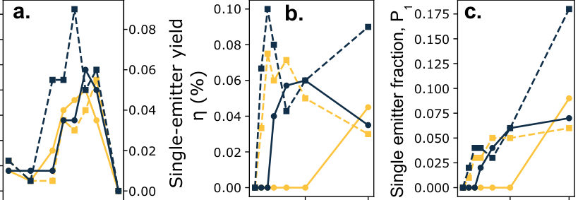
<figcaption class="paper-figure-caption"><b>Fig 2.</b> Figure 2: a. Single-emitter fraction and single-emitter yield as a function of annealing temperature for the Bi+/2+, and Sn+/2+ 200 ions/spot arrays. b. The single-emitter yield as a function of the dose for each species for the 900 ◦C sample. c. The single-emitter fraction for the same species and doses annealed at 900 ◦C.</figcaption>
</figure>
<figure class="paper-figure-card">
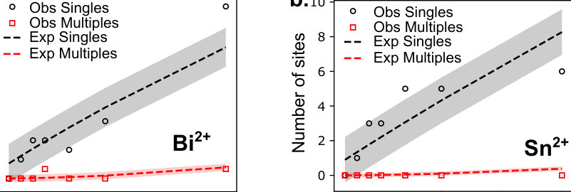
<figcaption class="paper-figure-caption"><b>Fig 3.</b> Figure 3: Numbers of single and multiple emitters as a function of dose for a. Bi2+ and b. Sn2+, with the expected number of sites given by a Poisson model in the low-dose regime shown as dashed lines with best-fit ˆα of Bi2+: (8.1±1.3)×10−4 emitters per ion and Sn2+: (4.5±0.9)×10−4 emitters per ion. The shaded bands in each plot represent the standard deviation of the residuals from each fit.</figcaption>
</figure>
<figure class="paper-figure-card">
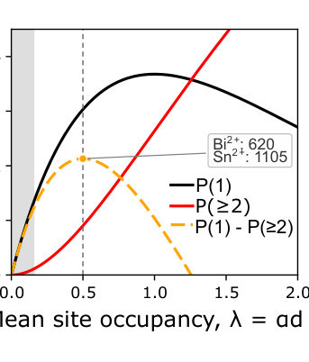
<figcaption class="paper-figure-caption"><b>Fig 4.</b> Figure 4: Modelled distributions (probability of dif- ferent numbers of emitters per spot) for multiple and single emitters as a function of the mean site occupancy (λ = αd). The difference distribution is also shown. The grey shaded region indicates the maximum extent of λ found in this work (λ = 0.16 for Bi2+). The peak in the difference distribution at λ = 0.5 corresponds to doses of 620 and 1105 ions/spot for Bi2+ and Sn2+, respectively.</figcaption>
</figure>
<figure class="paper-figure-card">
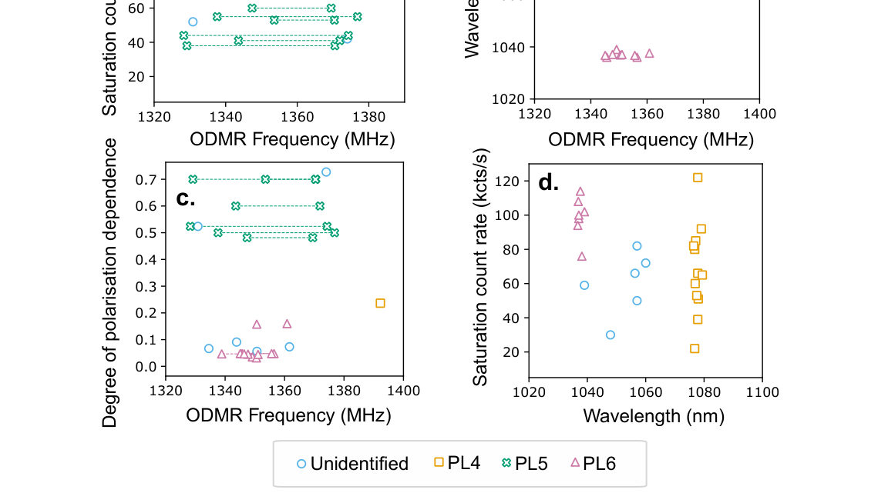
<figcaption class="paper-figure-caption"><b>Fig 5.</b> Figure 5: Pairwise scatter plots showing the correlations between different characterisation metrics. Each data point represents a single emitter in either the Bi+/2+ or Sn+/2+ in the 900 ◦C sample. Blue circles denote unidentified emitters, yellow squares PL4, green crosses PL5 and pink triangles PL6. a. Saturation count rate as a function of ODMR frequency. PL6 and PL5 centres form distinct clusters. Dashed lines connect the two ODMR frequencies of emitters with split resonances. These indicate hyperfine coupling to a nearby nuclear spin for the PL6 centres. b. ZPL wavelength as a function of ODMR frequency. No PL5 ZPLs were observed during this study. c. Degree of polarisation dependence...</figcaption>
</figure>
</div>

<p><strong>Summary.</strong> This research presents an efficient, scalable method to create and identify single photon emitters in 4H-SiC using maskless heavy-ion implantation. By combining implantation with a tiered characterization process—including photon correlation measurements and ODMR—the authors demonstrate high yields and rapid type identification at room temperature. This advances the feasibility of solid-state quantum technologies.</p>
<p><strong>Why it may be interesting.</strong> This work directly addresses the hardware bottleneck in solid-state quantum emitters by providing a scalable, non-destructive, and rapid identification protocol, which is crucial for building quantum circuits.</p>
<details>
<summary>Detailed structure</summary>
<p><strong>Main problem.</strong> The paper addresses the challenge of efficiently forming and rapidly identifying high-quality single photon emitters in silicon carbide (SiC) for use in scalable quantum technologies.</p>
<p><strong>Main result.</strong> The authors demonstrated that maskless heavy-ion implantation combined with a tiered characterization scheme allows for the formation and rapid identification of single emitters, achieving yields up to 18% at optimal annealing temperatures.</p>
<p><strong>Method.</strong> The methodology involves implanting heavy ions (Bi, Sn) into 4H-SiC, annealing the material, and then using a multi-step screening process involving PL mapping, photon correlation measurements ($g^{(2)}(	au)$), and ODMR spectroscopy.</p>
<p><strong>Model / system.</strong> The physical system is single photon emitters (e.g., oxygen-vacancy related centers) embedded in 4H-SiC. The formation process is modeled using Poisson statistics to estimate the optimal implantation dose required to maximize the single-emitter yield.</p>
<p><strong>Key observables.</strong> Second-order autocorrelation function ($g^{(2)}(	au)$), Photoluminescence (PL) spectra, Optically Detected Magnetic Resonance (ODMR) frequencies, and saturation count rates ($I_{	ext{sat}}$).</p>
<p><strong>Important parameters / regimes.</strong> Optimal annealing temperature ($900–1000^\circ	ext{C}$); Single-emitter yield ($\eta$) up to $18\%$; Characteristic ODMR frequencies for different emitter types.</p>
<p><strong>Assumptions / limitations.</strong> The identification relies on the assumption that the brightest emitters are above a fixed count rate threshold, and that the Poisson model accurately describes site occupancy.</p>
<p><strong>Figures summary.</strong> Figures show PL maps confirming single emitter locations, and detailed spectra (PL and ODMR) comparing the signatures of different emitter types (PL5 vs PL6) and their saturation behavior.</p>
<p><strong>Paper structure.</strong> The paper follows a structure detailing the implantation process, presenting the tiered characterization scheme (intensity threshold $
ightarrow g^{(2)}(  au) 
ightarrow$ spectral analysis), and concluding with quantitative results on yield and identification efficiency.</p>
</details>
<details>
<summary>Abstract</summary>
<p>Single photon emitters in silicon carbide (SiC) are a leading platform for scalable quantum technologies. Recent interest has focused on oxygen-vacancy-related emitters, which show exceptionally high optical brightness and strong spin readout contrast. One barrier to scalable quantum devices based on these emitters is the challenge of maskless formation and rapid identification. Here, we demonstrate the formation of isolated bright single emitters in 4H-SiC, using low-energy maskless implantation of heavy ions bismuth and tin. Following annealing, up to 18% of implanted sites host a single emitter, with optimal yields achieved at annealing temperatures of 900-1000 degrees C. Occupancy statistics are modelled to estimate the implantation dose that maximises single-emitter yield. We introduce a tiered characterisation scheme, where a simple intensity threshold isolates single-emitter candidates, confirmed through photon correlation measurements, after which correlations between polarisation, saturation count rate and magnetic resonance frequency assign emitter type. It is shown that time-consuming low-temperature spectroscopy is not necessary to distinguish emitter types. Together, maskless heavy-ion implantation and selective screening offer an efficient route to forming and rapidly identifying near-surface single emitters for room-temperature quantum technologies such as quantum sensing.</p>
</details>
<p><sub><a href="#top">↑ back to top</a></sub></p>

<p><a id="paper-2608.27045"></a></p>
<h3 id="a-superconducting-phase-transition-single-electron-transistor"><a href="http://arxiv.org/abs/2608.27045v1">A Superconducting Phase Transition Single-Electron Transistor</a></h3>
<p><strong>Authors:</strong> Gorka Aizpurua-Iraola, Thomas H. Swift, Felix-Ekkehard von Horstig, Domenic Prete, James Kirkman, Grayson M. Noah, Fabio Olivieri, Alberto Gomez-Saiz, M. Fernando Gonzalez-Zalba<br>
<strong>Type:</strong> experiment · <strong>Category:</strong> quantum information and computing · <strong>PDF:</strong> <a href="https://arxiv.org/pdf/2608.27045v1">https://arxiv.org/pdf/2608.27045v1</a><br>
<strong>Analysis basis:</strong> full PDF text, analyzed in chunks
<strong>Topic relevance:</strong> 🔥 <code>QC/QI experiment</code> <strong>4/5</strong> · <code>quantum measurements</code> <strong>3/5</strong> · <code>driven-dissipative phase transition</code> <strong>1/5</strong></p>
<div class="figure-strip-hint">↔ Scroll figures horizontally</div>
<div class="paper-figures-scroll">
<figure class="paper-figure-card">
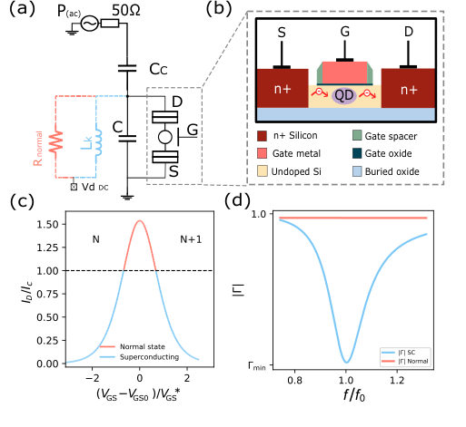
<figcaption class="paper-figure-caption"><b>Fig 1.</b> Figure 1. PTSET principle of operation. (a) Schematic view of the matching circuit with both TiN states: resis- tive state (red), superconducting state (blue). (b) Schematic cross-section of the SET showing a charged island at the silicon layer directly under the gate as well as the flow of the single-electron AC current (red arrows). (c) Simulated Coulomb oscillation: Normalized drain current to the crit- ical current of the superconductor thin film vs normalized gate-source voltage. (d) Calculated reflection coefficient |Γ| as a function of the frequency (normalized to the resonance frequency, f0) for both TiN thin film possible states: Super- conducting state (blue) and resistive state...</figcaption>
</figure>
<figure class="paper-figure-card">
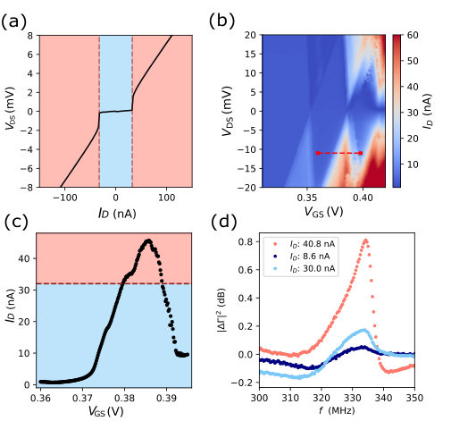
<figcaption class="paper-figure-caption"><b>Fig 2.</b> Figure 2. Circuit tuning of the PTSET. (a) Current- biased IV curve measurements of the TiN thin films taken at 0.6 T out-of plane field and VGS = 1 V, well in the on state of the transistor. A constant slope of 312 kΩ, 112 kΩasso- ciated with the on-state resistance of the FET and 200 kΩ with drain and source low-pass filters, is removed to highlight the superconducting region. Red and blue backgrounds repre- sent normal and superconducting states respectively. Vertical dashed lines indicate the phase transition current. (b) Drain current as a function of the gate-source and drain-source voltages, showing regions of charge stability, i.e. Coulomb diamonds. The horizontal red dashed line...</figcaption>
</figure>
<figure class="paper-figure-card">
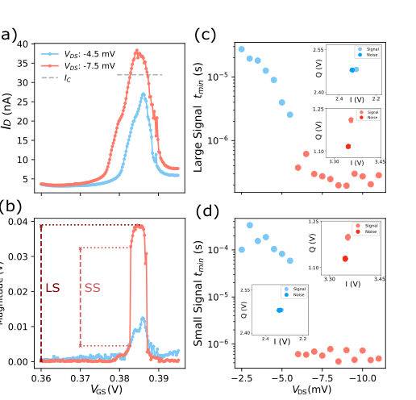
<figcaption class="paper-figure-caption"><b>Fig 3.</b> Figure 3. PT-SET SNR characterization. (a) Coulomb blockade oscillation plot: Drain current as a function of the applied gate voltage for -7.5 mV (red) and -4.5 mV( blue) DS bias. (b) Magnitude of the reflected rf voltage as a function of applied gate-source voltage for -7.5 mV (red) and -4.5 mV (blue) DS bias cases. The vertical dashed lines represent our definition of large and small signal regimes, where the charge sensing is mimicked by a VGS shift larger or smaller than the linewidth of the Coulomb peak, respectively. For the small signal regime, we take points separated by VGS = 467 µV. (c,d) Minimum integration time versus DS voltage in the large signal and small signal regime,...</figcaption>
</figure>
<figure class="paper-figure-card">
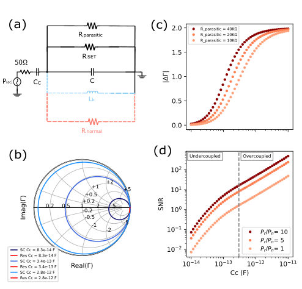
<figcaption class="paper-figure-caption"><b>Fig 4.</b> Figure 4. Theoretical SNR limits (a) The schematic model of the matching circuit with both TiN behaviour possibilities: resistive state (red), superconducting state (blue). (b) Smith chart for S parameter simulations in both resistive and su- perconducting models, for three different CC values. (c) Re- flection coefficient magnitude change from superconducting to resistive state as a function of CC , for three different Rparasitic values. (d) SNR as a function of CC for several Pr/Pnoise ra- tios and Rparasitic = 20 kΩ. The vertical line marks the CC value in which the circuit is critically coupled.</figcaption>
</figure>
</div>

<p><strong>Summary.</strong> This paper introduces the Phase-Transition Single-Electron Transistor (PTSET) as a novel, highly sensitive charge sensor for semiconductor spin qubits. By exploiting the abrupt impedance change during a superconducting-to-normal phase transition, the device achieves significant sensitivity enhancements over existing readout technologies. This establishes a promising, integrated route for next-generation quantum computing hardware.</p>
<p><strong>Why it may be interesting.</strong> The work directly addresses a critical component of quantum computing infrastructure—high-fidelity, low-power readout electronics—by coupling quantum measurement principles to superconducting phenomena.</p>
<details>
<summary>Detailed structure</summary>
<p><strong>Main problem.</strong> The paper addresses the need for ultrasensitive, integrated charge sensors to improve qubit state detection in semiconductor spin qubits.</p>
<p><strong>Main result.</strong> The Superconducting Phase Transition Single-Electron Transistor (PTSET) demonstrates sensitivity improvements of one to two orders of magnitude over conventional rfSETs.</p>
<p><strong>Method.</strong> The authors measured the change in reflected power ($\Delta\Gamma$) as the SET current forces a superconducting-to-normal phase transition in an integrated circuit.</p>
<p><strong>Model / system.</strong> The system is a PTSET, integrating a Single-Electron Transistor (SET) with a superconducting inductor whose state changes abruptly when the bias current exceeds the critical current ($I_c$).</p>
<p><strong>Key observables.</strong> Change in reflected power ($\Delta\Gamma$), minimum integration time ($t_{\min}$), and Signal-to-Noise Ratio (SNR).</p>
<p><strong>Important parameters / regimes.</strong> Critical current ($I_c$), coupling capacitance ($C_C$), and the ratio of signal to noise power.</p>
<p><strong>Assumptions / limitations.</strong> The analysis assumes certain conditions for noise power and approximates the SET resistance in the 'on' state for theoretical modeling.</p>
<p><strong>Figures summary.</strong> Figures illustrate the PTSET principle, showing the superconducting vs. normal state impedance change; they also plot SNR vs. coupling capacitance and $t_{\min}$ vs. bias voltage, demonstrating the enhancement.</p>
<p><strong>Paper structure.</strong> The paper establishes the physical principle of PTSET, demonstrates the enhanced sensing capability through measurements of $\Delta\Gamma$ and $t_{\min}$, and theoretically quantifies the resulting SNR improvement over standard rfSETs.</p>
</details>
<details>
<summary>Abstract</summary>
<p>Quantum computers require fast and accurate methods for qubit state detection. Phase-transition sensors exploit the abrupt change between two physical states of a material to achieve enhanced sensitivity and have enabled advanced detectors for quantum technologies, such as superconducting nanowire single-photon detectors. However, this sensing principle has not yet been applied to semiconductor spin qubits. Here, we demonstrate a superconducting phase-transition radio-frequency single-electron transistor (PTSET), a charge sensor for semiconductor spin qubits whose response is enhanced by a superconducting-to-normal phase transition. The transition is engineered by linking the sensor current to a low-critical-current, high-kinetic-inductance inductor integrated into the radio-frequency matching network. We demonstrate improvements in sensitivity of one and two orders of magnitude over conventional rfSETs in the large- and small-signal regimes, respectively. Our results establish phase-transition sensing as a route towards ultrasensitive, integrated charge sensors for semiconductor quantum computing and point to broader applications, including cryogenic photon detection for radio astronomy.</p>
</details>
<p><sub><a href="#top">↑ back to top</a></sub></p>

<p><a id="paper-2608.27426"></a></p>
<h3 id="detuning-and-stark-robust-rydberg-gates"><a href="http://arxiv.org/abs/2608.27426v1">Detuning- and Stark-robust Rydberg gates</a></h3>
<p><strong>Authors:</strong> Elie Bataille, Gyohei Nomura, Manuel Endres<br>
<strong>Type:</strong> theory · <strong>Category:</strong> other · <strong>PDF:</strong> <a href="https://arxiv.org/pdf/2608.27426v1">https://arxiv.org/pdf/2608.27426v1</a><br>
<strong>Analysis basis:</strong> full PDF text, analyzed in chunks
<strong>Topic relevance:</strong> 🔥 <code>Rydberg arrays</code> <strong>4/5</strong> · <code>QC/QI experiment</code> <strong>2/5</strong> · <code>Keldysh / 2PI / non-Gaussian methods</code> <strong>1/5</strong> · <code>analog quantum simulation</code> <strong>1/5</strong></p>
<div class="figure-strip-hint">↔ Scroll figures horizontally</div>
<div class="paper-figures-scroll">
<figure class="paper-figure-card">

<figcaption class="paper-figure-caption"><b>Fig 1.</b> FIG. 1. Overview of the physical setup and results. (a) Two-atom level structure for two-photon Rydberg exci- tation, with Rydberg blockade B. The inhomogeneous laser intensity results in inhomogeneous light shifts, which induce detrimental detuning errors. (b) Protocols introduced in this work. Top: robust gates with composite (shown) or si- multaneous (not shown) Rydberg and single-qubit control. Middle: pseudo-robust gates, where known detuning errors are mapped to correctable single-qubit errors. Bottom: fly- by gate, tailored to a fixed, calibrated differential Doppler shift. (c) Infidelity under static amplitude and detuning er- rors for the time-optimal gate [27, 28], the...</figcaption>
</figure>
<figure class="paper-figure-card">

<figcaption class="paper-figure-caption"><b>Fig 2.</b> FIG. 2. Detuning-robust and pseudo-robust protocols. (a) Level diagram for the robust protocols, realized by driving both the qubit and Rydberg transitions, or by using a two- tone Rydberg scheme. (b) Schematic of the pseudo-robust protocol, where detuning errors are not suppressed but con- verted into correctable single-qubit errors. (c) Phase mod- ulation waveforms and gate durations for the time-optimal protocol [27, 28], the composite detuning-robust gate, and the detuning pseudo-robust gate. (d) Required gate duration to achieve a given detuning error sensitivity reduction with the co-driven protocol, compared with the time-optimal gate and the composite detuning-robust gate. (e)...</figcaption>
</figure>
<figure class="paper-figure-card">

<figcaption class="paper-figure-caption"><b>Fig 3.</b> FIG. 3. Stark-robust and pseudo-robust protocols. (a) Minimal gate duration for composite Stark-robust and Stark pseudo-robust protocols with correlation ζ. At ζ →∞the protocols converge to their detuning-robust versions. (b) Ra- tio of expected infidelity from the time-optimal gate to that of the robust and pseudo-robust protocol depending on ζ and the normalized Rydberg decay rate Γr/|Ω|, for a Gaussian- distributed static relative intensity error with 1% RMS. Re- gions where none of the three protocols achieves F &gt; 1−10−2</figcaption>
</figure>
<figure class="paper-figure-card">

<figcaption class="paper-figure-caption"><b>Fig 4.</b> FIG. 4. Fly-by gate protocol. (a) Level diagram for the fly-by gate with differential detuning δ−. The detuning intro- duces a coupling to the Rydberg dark state |D⟩. (b) Required gate time for a fly-by gate depending on the differential de- tuning δ−/|Ω| and example phase modulation waveform at δ−/|Ω| = 1/2 (inset). The discontinuity between δ−= 0 and δ−&gt; 0 relaxes into a sharp but continuous gate time increase when the infidelity threshold is loosened.</figcaption>
</figure>
</div>

<p><strong>Summary.</strong> This paper develops novel, robust protocols for Rydberg entangling gates in neutral atoms that overcome the inherent limitations of conventional designs regarding light-shift detuning errors. By modifying the gate dynamics to involve both qubit states, the authors achieve error cancellation or conversion into correctable single-qubit errors. This advances the feasibility of high-fidelity quantum computation using Rydberg excitations.</p>
<p><strong>Why it may be interesting.</strong> This work directly addresses the primary bottleneck in scaling Rydberg quantum computing: error mitigation. By providing theoretically derived, robust gate protocols, it offers concrete pathways for improving gate fidelity in neutral atom quantum simulators and processors.</p>
<details>
<summary>Detailed structure</summary>
<p><strong>Main problem.</strong> Conventional Rydberg entangling gates suffer from adverse scaling of light-shift-induced detuning errors, and existing protocols cannot achieve robustness against these errors.</p>
<p><strong>Main result.</strong> The authors demonstrate new gate constructions that achieve full or partial robustness to detuning and Stark errors by involving both qubit states in the gate dynamics. These protocols can outperform time-optimal gates in specific noise regimes.</p>
<p><strong>Method.</strong> The work analyzes the gate fidelity under noise using advanced theoretical techniques, including defining robustness criteria by setting second derivatives of fidelity to zero, and comparing error scaling between different protocols.</p>
<p><strong>Model / system.</strong> The system involves neutral alkali atoms used for quantum computing, where entanglement is generated via Rydberg gates driven by two-photon transitions. The analysis uses a block-diagonal Hamiltonian considering couplings between $|0
angle, |1
angle$, and the Rydberg state $|r
angle$.</p>
<p><strong>Key observables.</strong> Gate fidelity, residual sensitivity measures ($S_\epsilon, S_\delta$), and the error scaling relative to noise strength ($\sigma_\delta$).</p>
<p><strong>Important parameters / regimes.</strong> Light-shift strength, intensity inhomogeneity, Rydberg decay rate, and the ratio $\zeta_{ij}$ quantifying intensity-to-detuning error conversion.</p>
<p><strong>Assumptions / limitations.</strong> The analysis assumes the Rabi frequency is kept at its maximum value ($\Omega = \Omega_{	ext{max}}$) and treats errors as quasi-static (Gaussian) for some parts of the analysis.</p>
<p><strong>Figures summary.</strong> Figures compare gate infidelity across various protocols (time-optimal vs. robust) under static errors, and show the parameter regimes where the new robust protocols outperform existing methods.</p>
<p><strong>Paper structure.</strong> The paper first establishes the limitations of conventional gates, then introduces a general framework involving both qubit states. It presents two robust constructions (error cancellation/conversion) and analyzes the performance regimes, concluding with the demonstration of a 'fly-by' gate primitive.</p>
</details>
<details>
<summary>Abstract</summary>
<p>Rydberg entangling gates driven by a two-photon transition in alkali atoms suffer from an adverse scaling of light-shift-induced errors. Robustness to such detuning errors is known to be impossible to achieve in the design of conventional Rydberg gate protocols, where only one of the qubit states is coupled to the Rydberg state. Here, we show that in a more general framework, in which both qubit states take part in the gate, full or partial robustness to these errors can be realized. We present two gate constructions, which either cancel the errors outright or convert them into single-qubit errors that can be corrected locally. We map the regimes -- in terms of light-shift strength, intensity inhomogeneity, and Rydberg decay rate -- in which these protocols outperform the widely used time-optimal Rydberg gate, and find that they already include the conditions of state-of-the-art experiments. Finally, we show the existence of a Rydberg `fly-by' entangling gate, an important primitive for an emerging class of neutral-atom quantum computing architectures.</p>
</details>
<p><sub><a href="#top">↑ back to top</a></sub></p>

<p><a id="paper-2608.26446"></a></p>
<h3 id="detuning-robust-rydberg-entangling-gates-from-echoed-pulses"><a href="http://arxiv.org/abs/2608.26446v1">Detuning-robust Rydberg entangling gates from echoed pulses</a></h3>
<p><strong>Authors:</strong> Zhubing Jia, Yichao Yu, Xiye Hu, Lintao Li, Jacob Zheng, Christopher Monroe, Jacob P. Covey<br>
<strong>Type:</strong> theory · <strong>Category:</strong> other · <strong>PDF:</strong> <a href="https://arxiv.org/pdf/2608.26446v1">https://arxiv.org/pdf/2608.26446v1</a><br>
<strong>Analysis basis:</strong> full PDF text, analyzed in chunks
<strong>Topic relevance:</strong> 🔥 <code>Rydberg arrays</code> <strong>4/5</strong> · <code>QC/QI experiment</code> <strong>2/5</strong> · <code>analog quantum simulation</code> <strong>1/5</strong></p>
<div class="figure-strip-hint">↔ Scroll figures horizontally</div>
<div class="paper-figures-scroll">
<figure class="paper-figure-card">

<figcaption class="paper-figure-caption"><b>Fig 1.</b> Figure 2. (a) Simulated gate infidelity under anti-symmetric two-atom detuning (∆1 = −∆2 = ∆) for the ADR and TO pulses. (b) Optimized phase profiles of the ADR and TO pulses, with ΩτTO = 7.695 and Ωτ√</figcaption>
</figure>
<figure class="paper-figure-card">

<figcaption class="paper-figure-caption"><b>Fig 2.</b> Figure 4. (a)(b) Conditional infidelity and erasure conversion ratio of the DR pulse of Fig. 3(c) under two-atom detuning, assuming complete conversion of residual Rydberg popula- tion into erasures. The contour encloses the region of sim- ulated conditional fidelity above 99.9%. The shapes of the high-conversion-ratio and high-conditional-fidelity regions are particular to this pulse solution and are not a generic feature of the robust-pulse construction. (c) Infidelity along the sym- metric and antisymmetric diagonals of (a), before (solid) and after (dashed) erasure conversion. (d) Infidelity of the ADR pulse of Fig. 2(b) under anti-symmetric detuning, before and after erasure conversion.</figcaption>
</figure>
<figure class="paper-figure-card">

<figcaption class="paper-figure-caption"><b>Fig 3.</b> Figure 3. (a) Simulated gate infidelity as a function of the two-atom detunings ∆1 and ∆2 for the DR (left) and TO (right) pulses. Contours enclose the region of simulated fi- delity above 99.9%. (b) Infidelity along the symmetric (∆1 = ∆2) and antisymmetric (∆1 = −∆2) diagonals of (a); the leading-order response to detuning is removed for the DR pulse along both directions. (c) Optimized phase profiles of the DR and TO pulses with ΩτTO = 7.695 and Ωτ√</figcaption>
</figure>
</div>

<p><strong>Summary.</strong> This paper presents a novel, detuning-robust scheme for implementing two-qubit entangling gates using Rydberg atoms in neutral atom arrays. By designing specialized, echoed pulse sequences, the authors circumvent fundamental limitations in gate design, achieving high fidelity even when the laser frequency or intensity deviates significantly from the ideal calibration point. This significantly improves the feasibility of using neutral atoms for practical, fault-tolerant quantum computation.</p>
<p><strong>Why it may be interesting.</strong> This work directly addresses the practical limitations of implementing quantum gates using neutral atoms, providing concrete pulse engineering techniques to enhance robustness against common experimental imperfections like frequency drift and intensity inhomogeneity.</p>
<details>
<summary>Detailed structure</summary>
<p><strong>Main problem.</strong> The primary challenge is designing Rydberg entangling gates that are robust to detuning errors, overcoming the theoretical limitation that no simple pulse can make a controlled-Z gate first-order insensitive to detuning.</p>
<p><strong>Main result.</strong> The authors propose an echoed pulse sequence that achieves a maximally-entangling ZZ gate with no leading-order response to arbitrary detunings, maintaining high fidelity ($<10^{-3}$) over a wide detuning range.</p>
<p><strong>Method.</strong> The method involves using quantum optimal control and perturbation theory to design pulse shapes that cancel out leading-order detuning errors, supplemented by an echo sequence to remove residual single-qubit phase errors.</p>
<p><strong>Model / system.</strong> The system utilizes neutral atoms trapped in optical tweezer arrays, employing Rydberg states to mediate two-qubit interactions. The analysis involves modeling the Hamiltonian under various detuning conditions ($\Delta_1, \Delta_2$) and optimizing the pulse sequence.</p>
<p><strong>Key observables.</strong> Gate fidelity ($F$), infidelity as a function of detuning ($\Delta$), and the residual Rydberg population leakage.</p>
<p><strong>Important parameters / regimes.</strong> Detuning ($\Delta$), Rabi frequency ($\Omega$), and the ratio of detuning to Rabi frequency ($\Delta/\Omega$).</p>
<p><strong>Assumptions / limitations.</strong> The analysis relies on first-order perturbation theory, and it assumes that residual Rydberg population leakage can be converted into heralded erasures for fault-tolerant analysis.</p>
<p><strong>Figures summary.</strong> Figures illustrate the level scheme and circuit diagram for the gate, showing error channels under various detunings. Other figures compare simulated gate infidelity for different pulse types (TO vs. ADR/DR) across detuning ranges and show the physical constraints on pulse shaping (modulation frequency).</p>
<p><strong>Paper structure.</strong> The paper progresses from identifying the detuning robustness problem to developing the theoretical framework using perturbation theory and optimal control. It details the specific pulse sequence (echoed $\sqrt{CZ}$) and analyzes its performance under symmetric, anti-symmetric, and arbitrary detunings, concluding with discussions on physical constraints like bandwidth.</p>
</details>
<details>
<summary>Abstract</summary>
<p>Rydberg-based two-qubit gate fidelities in neutral atom arrays are limited chiefly by laser intensity inhomogeneity and by detuning errors from frequency miscalibration, background-field drift, intermediate state light shift and Doppler shifts. Quantum optimal control can suppress the former, but no pulse can render a controlled-Z gate first-order insensitive to detuning. Here we show that this obstruction can be circumvented by designing Rydberg gate pulses with every leading-order detuning error relegated to single-qubit Z-rotations, which an echoed sequence removes. The resulting maximally-entangling ZZ gate has no leading-order response to arbitrary detunings on either atom, maintaining an infidelity below $10^{-3}$ much wider range of single-atom detunings than previous gate designs. We further show that a large fraction of residual error is dominated by population outside the computational subspace, which can be converted into heralded erasures. Our results significantly reduce the requirements on laser frequency stability and intensity homogeneity, field calibration and atomic temperature toward practical fault-tolerant quantum computing with neutral atoms.</p>
</details>
<p><sub><a href="#top">↑ back to top</a></sub></p>

<p><a id="paper-2608.26240"></a></p>
<h3 id="least-variable-quantum-counting-processes"><a href="http://arxiv.org/abs/2608.26240v1">Least Variable Quantum Counting Processes</a></h3>
<p><strong>Authors:</strong> Bita Olamaei, Florian Meier, Costantino Budroni, Pharnam Bakhshinezhad, Giuseppe Vitagliano<br>
<strong>Type:</strong> theory · <strong>Category:</strong> statistical mechanics · <strong>PDF:</strong> <a href="https://arxiv.org/pdf/2608.26240v1">https://arxiv.org/pdf/2608.26240v1</a><br>
<strong>Analysis basis:</strong> full PDF text, analyzed in chunks
<strong>Topic relevance:</strong> 🔥 <code>quantum measurements</code> <strong>4/5</strong> · <code>Full counting statistics</code> <strong>3/5</strong></p>
<div class="figure-strip-hint">↔ Scroll figures horizontally</div>
<div class="paper-figures-scroll">
<figure class="paper-figure-card">

<figcaption class="paper-figure-caption"><b>Fig 1.</b> FIG. 1. Conceptual overview of the setup. (a) Discrete-time evolution of a finite-dimensional quantum system is considered. The waiting time probability distribution is shown as a function of the number of timesteps L in the panels b-d. (b) For memory size d, any number of counts up and including d can be deterministically counted. (c) For a mean tick time µdt strictly greater than d, the tick distribution necessarily becomes probabilistic. (d) In the limit of µdt →∞, the discrete-time process converges to a continuous-time one with continuous waiting time distribution.</figcaption>
</figure>
<figure class="paper-figure-card">

<figcaption class="paper-figure-caption"><b>Fig 2.</b> FIG. 2. First-tick statistics of an optimized discrete-time quantum counting process. (a) First-tick distribution pL = fL−1 −fL, shown as a function of the discrete waiting time L. The coherent dynamics concentrates most of the probability in a narrow interval around the prescribed mean µdt, here chosen to be µdt = 2d. (b) The inset shows the continuous-time waiting time distribution p(t). (c) Corresponding hazard hL = 1 −fL/ fL−1. The hazard remains suppressed during the initial no-tick evolution and rises sharply when the conditioned state reaches the detector direction. (d) The inset shows the hazard h(t) for continuous-time.</figcaption>
</figure>
<figure class="paper-figure-card">

<figcaption class="paper-figure-caption"><b>Fig 3.</b> FIG. 3. Optimized cost and continuous-time accuracy. (a) Minimum discrete-time cost CFopt d (µdt) as a function of the prescribed mean first-tick time for different Hilbert-space dimensions d. Negative val- ues violate the classical d-state variance bound. At large µdt, the op- timized curves approach the continuous-time regime. (b) Relative precision N = µ2 ct/σ2 ct of the optimized continuous-time processes as a function of d, on logarithmic axes. The dashed line is a finite- size power-law fit Nopt ∝dα, with α ≃7/3. Because the general asymptotic bound of Ref. [31] is quadratic in d, this exponent should be understood as an effective scaling over the numerically accessible range and...</figcaption>
</figure>
<figure class="paper-figure-card">

<figcaption class="paper-figure-caption"><b>Fig 4.</b> FIG. 4. Illustration of the hazard-based lower bound on the discrete- time cost function, CFd ≥2dµdt/hmax −(d + 1)µ2 dt. At fixed d and µdt, a uniformly smaller maximal hazard forces a larger weighted survival tail and therefore a larger cost. The shaded region visualizes the forbidden region implied by the bound.</figcaption>
</figure>
<figure class="paper-figure-card">

<figcaption class="paper-figure-caption"><b>Fig 5.</b> Figure 4 illustrates the resulting constraint imposed by the maximal hazard. For fixed dimension d and mean waiting time µdt, a smaller value of hmax raises the lower bound in Eq. (36).</figcaption>
</figure>
</div>

<p><strong>Summary.</strong> This paper establishes a quantum advantage in the temporal precision of counting processes when memory is finite. By deriving rigorous variance bounds for classical counting processes, the authors show that quantum dynamics can surpass these classical limits. This work connects discrete-time quantum measurement theory to continuous-time quantum timekeeping.</p>
<p><strong>Why it may be interesting.</strong> This work directly addresses quantum timekeeping and the fundamental limits of measurement precision, which is highly relevant to quantum optics and open quantum systems theory.</p>
<details>
<summary>Detailed structure</summary>
<p><strong>Main problem.</strong> The paper investigates the fundamental limits on temporal precision (tick timing) when counting stochastic events using finite memory resources, comparing classical and quantum constraints.</p>
<p><strong>Main result.</strong> Quantum counting processes can achieve smaller first-tick fluctuations than any classical process with the same memory size and mean tick time, establishing a finite-memory quantum advantage in temporal precision.</p>
<p><strong>Method.</strong> The authors derive rigorous finite-memory variance bounds for classical counting processes and use numerical optimization and asymptotic analysis to identify quantum processes that violate these classical bounds.</p>
<p><strong>Model / system.</strong> The model involves finite-dimensional classical and quantum counting processes, described by substochastic transition matrices or quantum instruments/Kraus operators, respectively. The analysis covers both discrete-time and continuous-time limits.</p>
<p><strong>Key observables.</strong> Variance ($\sigma^2_{dt}$), first-tick probability ($p_L$), hazard rate ($h_L$), and the relative precision measure ($N = \mu^2_{ct} / \sigma^2_{ct}$).</p>
<p><strong>Important parameters / regimes.</strong> Memory dimension ($d$), mean tick time ($\mu_{dt}$), and the asymptotic limit ($\mu_{dt} 	o \infty$ or $\delta 	o 0^+$).</p>
<p><strong>Assumptions / limitations.</strong> The analysis assumes autonomous machines operating cyclically (renewal processes) and utilizes approximations for large mean times and small time steps ($\delta$).</p>
<p><strong>Figures summary.</strong> Figures illustrate the conceptual overview of discrete-time evolution, the waiting time probability distribution for various memory sizes, and the comparison of quantum vs. classical statistics.</p>
<p><strong>Paper structure.</strong> The paper develops the classical variance bound, identifies quantum violations via numerical optimization, and then analyzes the asymptotic continuous-time limit, culminating in an analytical solution for the qubit case ($d=2$).</p>
</details>
<details>
<summary>Abstract</summary>
<p>Counting processes provide a fundamental description of stochastic events ranging from photon detection to clock ticks. A central question is how accurately such events can be timed when only finite memory resources are available. Here, we investigate this problem within a general framework of finite-dimensional classical and quantum counting processes. We derive a rigorous finite-memory variance bound obeyed by every classical $d$-state counting process, which is tight and saturated by a discrete Erlang-type ladder process. Through numerical optimization, we identify quantum counting processes that violate this classical bound, achieving smaller first-tick fluctuations than any classical process with the same memory size and mean tick time. For the qubit case, we further derive an analytical large-mean bound within a single-Kraus no-tick family, showing that the quantum advantage persists asymptotically within this class. The optimized quantum processes exhibit coherent conditioned dynamics and approach a continuous-time quantum-jump description as the mean increases. Our results establish a finite-memory quantum advantage in temporal precision and connect discrete-time counting processes with continuous-time quantum timekeeping.</p>
</details>
<p><sub><a href="#top">↑ back to top</a></sub></p>

<p><a id="paper-2608.26499"></a></p>
<h3 id="real-space-analysis-of-two-photon-polarization-states-in-type-ii-spdc-for-high-purity-polarization-entanglement"><a href="http://arxiv.org/abs/2608.26499v1">Real-Space Analysis of Two-Photon Polarization States in Type-II SPDC for High-Purity Polarization Entanglement</a></h3>
<p><strong>Authors:</strong> Koji Taninaka, Takashi Kakue, Ken Morita<br>
<strong>Type:</strong> both · <strong>Category:</strong> other · <strong>PDF:</strong> <a href="https://arxiv.org/pdf/2608.26499v1">https://arxiv.org/pdf/2608.26499v1</a><br>
<strong>Analysis basis:</strong> full PDF text, analyzed in chunks
<strong>Topic relevance:</strong> 🔥 <code>quantum optics experiment</code> <strong>4/5</strong> · <code>interference shaping light</code> <strong>3/5</strong></p>
<div class="figure-strip-hint">↔ Scroll figures horizontally</div>
<div class="paper-figures-scroll">
<figure class="paper-figure-card">

<figcaption class="paper-figure-caption"><b>Fig 1.</b> Fig. 1. (a) Schematic illustration of Type-II SPDC in a BBO crystal. Polarization-entangled photon pairs are generated in the overlap regions (A and B) of the signal and idler emission cones. (b) Calculated momentum-space intensity distributions of the signal and idler photons. (c) Calculated real-space intensity distributions evaluated at an observation plane located 10 cm from the crystal output surface. The calculations were performed for an optic-axis angle of 𝜃= 41.8∘, a pump wavelength of 𝜆𝑝= 405 nm, signal and idler wavelengths of 𝜆𝑠,𝑖= 810 nm, and a crystal length of 𝐿= 2 mm.</figcaption>
</figure>
<figure class="paper-figure-card">

<figcaption class="paper-figure-caption"><b>Fig 2.</b> Fig. 2. Spatial distributions of the amplitude-balance parameter 𝐶(𝝆𝐴, 𝝆𝐵) and the relative phase 𝜙(𝝆𝐴, 𝝆𝐵) calculated from the real-space biphoton wavefunction. (a1) Analysis region 𝝆𝐵 (blue) for a fixed photon position 𝝆𝐴0 (red) located at the center of the overlap region of the two SPDC rings. (a2) Spatial distribution of 𝐶(𝝆𝐴0,𝝆𝐵) . (a3) Spatial distribution of 𝜙(𝝆𝐴0,𝝆𝐵) . (b1) Analysis region corresponding to 𝝆𝐴= (𝑥𝐴0, 𝑦𝐴) and 𝝆𝐵= (𝑥𝐵0, 𝑦𝐵), where 𝑥𝐵0 = −𝑥𝐴0. (b2) Spatial distribution of 𝐶(𝑥𝐴0,𝑦𝐴, 𝑥𝐵0, 𝑦𝐵). (b3) Spatial distribution of 𝜙(𝑥𝐴0, 𝑦𝐴, 𝑥𝐵0, 𝑦𝐵) . (c1) Analysis region corresponding to 𝝆𝐴= (𝑥𝐴, 𝑦𝐴0) and 𝝆𝐵= (𝑥𝐵, 𝑦𝐵0), where 𝑦𝐴0 = 𝑦𝐵0. (c2) Spatial distribution of 𝐶(𝑥𝐴, 𝑦𝐴0,...</figcaption>
</figure>
<figure class="paper-figure-card">

<figcaption class="paper-figure-caption"><b>Fig 3.</b> Figure 3(a) shows the calculated results for circular and elliptical apertures. The horizontal axis represents the brightness normalized to that obtained with the largest aperture, and the vertical axis represents the calculated 𝑆. The blue solid curve represents the results for circular apertures with different diameters, whereas the orange solid curve represents the results for elliptical apertures with a fixed length along the major axis (𝑥-direction) and a variable length along the minor axis (𝑦-direction). The red triangle and green circle in Fig. 3(a) correspond to the equal-area aperture configurations shown in Figs. 3(b) and 3(c), respectively. As the aperture size increases, the...</figcaption>
</figure>
<figure class="paper-figure-card">

<figcaption class="paper-figure-caption"><b>Fig 4.</b> Fig. 3. Relationship between brightness and the 𝑆 parameter for different real-space aperture geometries. (a) Calculated 𝑆 for circular and elliptical apertures. The horizontal axis represents the brightness normalized to the value obtained with the largest circular aperture, whereas the vertical axis represents the calculated 𝑆. The blue curve corresponds to varying the diameter of the circular aperture, while the orange curve corresponds to varying the 𝑦-axis length of the elliptical aperture with the 𝑥-axis length fixed. The red triangle and green circle indicate the aperture configurations shown in (b) and (c), respectively.</figcaption>
</figure>
<figure class="paper-figure-card">

<figcaption class="paper-figure-caption"><b>Fig 5.</b> Fig. 4. Experimental setup and aperture geometries used to investigate the effect of aperture geometry on polarization entanglement. (a) Experimental setup. Photon pairs generated by Type-II SPDC are transmitted through either a circular aperture (iris) or a slit aperture before being coupled into multimode fibers and detected by Si avalanche photodiodes. The Bell parameter is evaluated from coincidence counts between detectors A and B. A band-pass filter (BPF, 810 nm center wavelength, 10 nm bandwidth) is used to select photon pairs centered at 810 nm. (b) Circular iris and slit apertures used for the measurements.</figcaption>
</figure>
</div>

<p><strong>Summary.</strong> This paper investigates how the geometry of photon collection apertures affects the quality of polarization entanglement generated via Type-II SPDC. By analyzing the real-space biphoton wavefunction, the authors demonstrate that restricting collection along specific spatial directions maximizes entanglement purity while maintaining high photon flux. This establishes a practical method for designing superior entangled-photon sources.</p>
<p><strong>Why it may be interesting.</strong> This work provides a concrete, actionable design principle for optimizing quantum light sources by linking the fundamental quantum state structure (real-space wavefunction) directly to practical optical components (apertures).</p>
<details>
<summary>Detailed structure</summary>
<p><strong>Main problem.</strong> The study aims to optimize the collection geometry for Type-II SPDC sources to simultaneously achieve high polarization-entanglement purity and high photon-pair collection efficiency.</p>
<p><strong>Main result.</strong> Designing apertures based on the real-space biphoton wavefunction, specifically by restricting collection along the direction of strong polarization-position correlation, improves the trade-off between entanglement purity and brightness.</p>
<p><strong>Method.</strong> The authors calculated the real-space two-photon wavefunction and analyzed its spatial dependence to guide the design of apertures, which were then tested through both numerical simulations and physical measurements.</p>
<p><strong>Model / system.</strong> The system is Type-II Spontaneous Parametric Down-Conversion (SPDC) using a BBO crystal, generating polarization-entangled photon pairs. The analysis relies on the complex coupling between spatial and polarization degrees of freedom due to birefringence.</p>
<p><strong>Key observables.</strong> CHSH Bell parameter (S) for entanglement purity, coincidence count rate (Brightness), Amplitude Balance (C), and Relative Phase ($\phi$).</p>
<p><strong>Important parameters / regimes.</strong> Aperture shapes (circular vs. slit/elliptical), and the spatial correlation direction derived from the biphoton wavefunction.</p>
<p><strong>Assumptions / limitations.</strong> The theoretical model assumes monochromatic pump, signal, and idler photons, which is noted as a potential source of discrepancy with the experimental results.</p>
<p><strong>Figures summary.</strong> Figures illustrate the spatial dependence of entanglement diagnostics (C and $\phi$) and compare the Bell parameter (S) versus brightness for different aperture shapes (circular vs. slit), showing the slit's advantage.</p>
<p><strong>Paper structure.</strong> The paper progresses from establishing the theoretical framework using the real-space wavefunction to analyzing the spatial dependence of entanglement diagnostics, culminating in experimental comparisons between different aperture geometries to validate the design principle.</p>
</details>
<details>
<summary>Abstract</summary>
<p>Spontaneous parametric down-conversion (SPDC) is one of the most widely used sources of polarization-entangled photon pairs, and understanding the generated biphoton state is essential for realizing high-brightness and high-purity entangled-photon sources. In particular, Type-II SPDC produces a biphoton wavefunction with a complex coupling between the spatial and polarization degrees of freedom owing to birefringence. In this study, we calculate the real-space distribution of the two-photon polarization state from the biphoton wavefunction of Type-II SPDC generated in a \b{eta}-barium borate (BBO) crystal. By identifying the spatial correlation direction between polarization and real-space coordinates, we designed aperture shapes that restrict the collection along this correlation direction. Through both numerical simulations and experiments, we demonstrate that such correlation-aligned apertures simultaneously achieve higher entanglement purity and improved photon collection efficiency. These results establish a practical design principle for optimizing aperture geometries based on the real-space biphoton wavefunction, providing a new approach to realizing high-purity and high-brightness SPDC entangled-photon sources.</p>
</details>
<p><sub><a href="#top">↑ back to top</a></sub></p>

<p><a id="paper-2608.27322"></a></p>
<h3 id="the-heavy-fermi-polaron-i-the-lithium-cesium-experiment"><a href="http://arxiv.org/abs/2608.27322v1">The heavy Fermi polaron I: the Lithium-Cesium experiment</a></h3>
<p><strong>Authors:</strong> Michael Rautenberg, Tobias Krom, Eleonora Lippi, Lauriane Chomaz, Matthias Weidemüller<br>
<strong>Type:</strong> experiment · <strong>Category:</strong> quantum gases · <strong>PDF:</strong> <a href="https://arxiv.org/pdf/2608.27322v1">https://arxiv.org/pdf/2608.27322v1</a><br>
<strong>Analysis basis:</strong> full PDF text, analyzed in chunks
<strong>Topic relevance:</strong> 🔥 <code>analog quantum simulation</code> <strong>4/5</strong> · <code>Keldysh / 2PI / non-Gaussian methods</code> <strong>1/5</strong> · <code>quantum measurements</code> <strong>1/5</strong></p>
<div class="figure-strip-hint">↔ Scroll figures horizontally</div>
<div class="paper-figures-scroll">
<figure class="paper-figure-card">

<figcaption class="paper-figure-caption"><b>Fig 1.</b> FIG. 1. Left: Major components of the experimental setup (final optical dipole trap, ODT, and two co-propagating Ra- man spectroscopy beams) and schematic representation of the resulting sample (bottom left) of a few Cs impurities (blue) in a dense quantum degenerate Fermi sea of Li (red). Right box: Level scheme relevant for the spectroscopy using two internal impurity states. The impurity Cs|1⟩state features tunable interactions with the surrounding bath atoms and forms a polaron, whereas the effectively non-interacting Cs|2⟩state serves as a reference state. Depending on the impurity-bath interaction parameter 1/(kFa), the system can either be in the attractive (negative energies) or...</figcaption>
</figure>
<figure class="paper-figure-card">

<figcaption class="paper-figure-caption"><b>Fig 2.</b> FIG. 2. Magnetic field dependence of intra- (upper panel) and interspecies (lower panel) interactions relevant for the sample preparation parametrized by their respective s-wave scattering lengths a. The gray dashed line marks the magnetic field where the Li|1⟩-Li|3⟩[32] mixture is evaporated, whereas the gray dotted line marks the field where Li|1⟩-Li|3⟩interactions vanish. A detailed view around the Li|2⟩-Cs|1⟩Feshbach resonance close to 888.6 G used for the polaron spectroscopy is presented on the right-hand side. The upper panel shows the Li|1⟩-Cs scattering lengths, whereas the lower panel contains those of Li|2⟩-Cs. Black arrows indicate magnetic field ramps during sample preparation...</figcaption>
</figure>
<figure class="paper-figure-card">

<figcaption class="paper-figure-caption"><b>Fig 3.</b> FIG. 3. Local Fermi temperature TF and ratio of temperature to TF as a function of the number of Li atoms (per spin state, where applicable) over the experimental sequence. Note that time t runs from right to left as indicated by the arrows at the top. The circled numbers correspond to the preparation steps in Fig. 2, and the shaded region marks the evaporation at 320 G. The darker (lighter) colored points refer to Li in the final trap (DT).</figcaption>
</figure>
<figure class="paper-figure-card">

<figcaption class="paper-figure-caption"><b>Fig 4.</b> FIG. 4. a: Li trap frequencies in the final ODT. Each data point is the frequency resulting from fitting a damped sinu- soidal oscillation to the time evolution of the size of a non- interacting cloud of Li atoms following a sudden change in trap power. Error bars represent the standard error of the fit. Solid lines are predictions of the model including optical, mag- netic, and gravitational potentials. The colors represent mea- surements along three spatial directions. The vertical dashed line marks the trap power used in the polaron experiments. b and c: trap potentials for Li (Cs) as red (blue) solid lines to- gether with cuts of the density distributions through the trap minimum...</figcaption>
</figure>
<figure class="paper-figure-card">

<figcaption class="paper-figure-caption"><b>Fig 5.</b> FIG. 5. Spectroscopic measurement of the magnetic field as a function of the delay with respect to a trigger that is syn- chronized to the AC power grid. Each data point (gray) rep- resents the resonance position fc determined by a fit to a Cs radio-frequency spectrum recorded with 156 µs square-shaped π-pulses. Each spectrum consists of 30 data points and the error bars represent the 1σ-error of the fit. Blue data points are the mean of four independent measurements at each de- lay with error bars representing their standard deviation. The gray line is a 50 Hz sine wave fit serving as a guide to the eye. The deviations of the fitted resonance positions (left y-axis) can be converted to...</figcaption>
</figure>
</div>

<p><strong>Summary.</strong> This paper reports on an experiment studying Fermi polarons using a quantum gas mixture of Lithium and Cesium atoms. By utilizing optical Raman spectroscopy, the researchers probe the impurity's excitation spectrum in a highly degenerate Fermi sea. The setup is notable for achieving a large mass imbalance, allowing exploration of new physics regimes in polaron systems.</p>
<p><strong>Why it may be interesting.</strong> This work provides a clean, tunable platform to study strongly correlated impurity dynamics in a Fermi sea, directly relevant to understanding quasiparticle renormalization in quantum many-body systems.</p>
<details>
<summary>Detailed structure</summary>
<p><strong>Main problem.</strong> The study of Fermi polarons, specifically investigating the system dynamics in a regime characterized by a large mass imbalance between the impurity and the surrounding Fermi sea.</p>
<p><strong>Main result.</strong> The experiment successfully created and characterized the Fermi polaron in a highly degenerate quantum gas mixture, accessing regimes previously inaccessible due to the large mass ratio.</p>
<p><strong>Method.</strong> Optical Raman spectroscopy without relative momentum transfer was used to perform injection spectroscopy, allowing for the measurement of polaron energies.</p>
<p><strong>Model / system.</strong> The system is a quantum gas mixture of bosonic Cesium ($^{133}	ext{Cs}$) impurities immersed in a deeply degenerate Fermi gas of Lithium ($^6	ext{Li}$), with interspecies interactions tunable via a Feshbach resonance.</p>
<p><strong>Key observables.</strong> Polaron energies (measured as deviations in two-photon transition frequency), local Fermi energy ($E_F$), and temperature ratio ($T/T_F$).</p>
<p><strong>Important parameters / regimes.</strong> Large mass imbalance ($M/m \approx 22$), low temperature ($T/T_F \sim 0.2$), and tunable interspecies scattering lengths ($a_{	ext{Li-Cs}}$).</p>
<p><strong>Assumptions / limitations.</strong> The sequential loading process is necessary due to differing atomic properties, and the determination of temperature relies on Cesium impurities acting as thermometers.</p>
<p><strong>Figures summary.</strong> Figures illustrate the experimental setup, magnetic field dependence of interactions, and the evolution of the system's degeneracy ($T/T_F$) over the experimental sequence.</p>
<p><strong>Paper structure.</strong> The paper details the complex, multi-step sample preparation process (loading, cooling, state preparation) followed by the spectroscopic measurement technique used to probe the polaron excitation spectrum.</p>
</details>
<details>
<summary>Abstract</summary>
<p>We present details of an experimental platform for studying Fermi polarons in a quantum-gas mixture. The system consists of about a thousand bosonic $^{133}$Cs impurities immersed in a deeply degenerate Fermi gas ($T/T_F \sim 0.2$) of approximately $2\times 10^5$ $^6$Li atoms in a single hyperfine state, with interspecies interactions tunable via a Feshbach resonance. Using optical Raman spectroscopy without relative momentum transfer, we perform injection spectroscopy and thereby create the Fermi polaron. Owing to the large mass imbalance between the two species, the setup provides access to previously unexplored regimes of Fermi polarons.</p>
</details>
<p><sub><a href="#top">↑ back to top</a></sub></p>

<p><a id="paper-2608.26946"></a></p>
<h3 id="low-temperature-magnetism-and-spin-dynamics-in-the-disordered-triangular-lattice-ybmath180math-compound-licaybmath181mathbomath182mathmath183math"><a href="http://arxiv.org/abs/2608.26946v1">Low-temperature magnetism and spin dynamics in the disordered triangular-lattice Yb$^{3+}$ compound LiCaYb$_5$(BO$_3$)$_6$</a></h3>
<p><strong>Authors:</strong> Monika Jawale, Saikat Nandi, Prashanta K. Mukharjee, Philipp Gegenwart, A. V. Mahajan<br>
<strong>Type:</strong> experiment · <strong>Category:</strong> disordered systems and neural networks · <strong>PDF:</strong> <a href="https://arxiv.org/pdf/2608.26946v1">https://arxiv.org/pdf/2608.26946v1</a><br>
<strong>Analysis basis:</strong> full PDF text, analyzed in chunks
<strong>Topic relevance:</strong> 🔥 <code>analog quantum simulation</code> <strong>4/5</strong> · <code>scars &amp; prethermalization</code> <strong>1/5</strong></p>
<div class="figure-strip-hint">↔ Scroll figures horizontally</div>
<div class="paper-figures-scroll">
<figure class="paper-figure-card">

<figcaption class="paper-figure-caption"><b>Fig 1.</b> FIG. 1. (a) Crystal structure of LCYBO showing the stacking of the Yb-containing layers along the c-axis. Yb(1), Yb(2), and Yb(3) sites, which belong to the same distorted triangu- lar magnetic layer, are shown together with Li, Ca, B, and O in blue, pink, maroon, green, and red, respectively; the Ca sites are partially obscured in this projection. Equivalent distorted triangular magnetic layers are stacked along the c- axis. (b) ab-plane projection of a single distorted triangular magnetic layer formed by the Yb1, Yb2, and Yb3 sites. (c) Distorted triangular arrangement of the Yb ions within the same magnetic layer, showing the inequivalent Yb–Yb dis- tances (indicated). Structure...</figcaption>
</figure>
<figure class="paper-figure-card">

<figcaption class="paper-figure-caption"><b>Fig 2.</b> FIG. 2. Rietveld refinement of the powder XRD pattern of LCYBO showing observed, calculated, and difference profiles along with Bragg peak positions.</figcaption>
</figure>
<figure class="paper-figure-card">

<figcaption class="paper-figure-caption"><b>Fig 3.</b> FIG. 3. (a)Temperature-dependent magnetic susceptibility of LCYBO measured in an applied field of 100 Oe under ZFC and FC conditions (left axis), and its first derivative (right axis) showing a clear minimum near 0.5 K. (b) Inverse mag- netic susceptibility measured at 10 kOe under ZFC conditions for LCYBO. The dashed and solid lines represent the two-level fit and the high-temperature Curie–Weiss fit (180–300 K), respectively. Inset: Curie–Weiss fit in the low-temperature range (0.75–20 K).</figcaption>
</figure>
<figure class="paper-figure-card">

<figcaption class="paper-figure-caption"><b>Fig 4.</b> FIG. 4. Isothermal magnetization M(H) measured at 0.4 K, 2K and 50 K for LiCaYb5(BO3)6. Dashed line: linear fit extrapolated to saturation magnetization; solid line: Brillouin function fit.</figcaption>
</figure>
<figure class="paper-figure-card">

<figcaption class="paper-figure-caption"><b>Fig 5.</b> FIG. 5. (a)Temperature and field dependence of the total specific heat of LCYBO plotted on a log–log scale to emphasize the low-T region. The solid line represents the estimated lattice contribution. The inset shows the low-temperature zero-field data below 2 K, where the arrow marks the anomaly near 0.43 K. (b) Magnetic contribution to the specific heat, Cm(T), obtained after subtracting the lattice contribution. The broad maximum shifts toward higher temperature with increasing magnetic field, indicating field-induced evolution of the low-energy magnetic excitations. The arrow marks the low-temperature anomaly in zero field. (c) Magnetic entropy change, ∆Sm(T), obtained by integrating...</figcaption>
</figure>
</div>

<p><strong>Summary.</strong> This work characterizes the magnetic behavior of the disordered triangular-lattice magnet $    ext{LiCaYb}_5(  ext{BO}_3)_6$. By combining magnetic susceptibility, specific heat, and ${}^{7}	ext{Li}$ NMR measurements, the authors show that the system enters a correlated, low-energy spin dynamic regime. The findings highlight how structural disorder and geometric frustration suppress conventional magnetic ordering, establishing it as a model disordered frustrated magnet.</p>
<p><strong>Why it may be interesting.</strong> The combination of geometric frustration, disorder, and strong spin-orbit coupling places this material in a highly relevant regime for studying quantum disordered magnetism, which shares conceptual links with frustrated quantum magnets studied in AMO physics.</p>
<details>
<summary>Detailed structure</summary>
<p><strong>Main problem.</strong> The study investigates the low-temperature magnetism and spin dynamics in a geometrically frustrated, disordered triangular-lattice rare-earth magnet.</p>
<p><strong>Main result.</strong> The compound exhibits correlated low-energy spin dynamics characterized by a well-isolated effective $J_{	ext{eff}}=1/2$ Kramers doublet, suggesting a correlated magnetic state rather than conventional long-range order.</p>
<p><strong>Method.</strong> A combination of bulk measurements (magnetization, specific heat) and local probes (${}^{7}	ext{Li}$ NMR) was employed to characterize the magnetic ground state.</p>
<p><strong>Model / system.</strong> The system is $ ext{LiCaYb}_5(  ext{BO}_3)_6$, a rare-earth magnet with $   ext{Yb}^{3+}$ ions forming a triangular lattice. The physics is complicated by geometric frustration, strong spin-orbit coupling, and structural disorder (antisite mixing and vacancies).</p>
<p><strong>Key observables.</strong> Magnetic susceptibility ($\chi(T)$), specific heat anomaly ($T^* \approx 0.43 	ext{ K}$), ${}^{7}	ext{Li}$ NMR linewidth broadening, and spin-lattice relaxation components.</p>
<p><strong>Important parameters / regimes.</strong> Effective $J_{	ext{eff}}=1/2$ doublet, weak antiferromagnetic interaction ($    heta_{  ext{CW}} \approx -0.54  ext{ K}$), and a large Crystal Electric Field (CEF) gap ($\Delta_{  ext{CEF}} \approx 200   ext{ K}$).</p>
<p><strong>Assumptions / limitations.</strong> The low-energy physics can be effectively described by spin-$1/2$ Kramers doublets due to strong SOC/CEF effects.</p>
<p><strong>Figures summary.</strong> The notes mention figures illustrating the refined crystal structure and powder XRD patterns confirming single-phase crystallization.</p>
<p><strong>Paper structure.</strong> The paper proceeds by first characterizing the structure and disorder, then measuring bulk magnetic properties ($\chi, C_p$) to establish the effective low-energy spin model, and finally using local probes (${}^{7}	ext{Li}$ NMR) to map out the inhomogeneous spin dynamics.</p>
</details>
<details>
<summary>Abstract</summary>
<p>The interplay between geometric frustration, spin--orbit coupling, and structural disorder can give rise to unconventional magnetic ground states in rare-earth triangular-lattice magnets. We report low-temperature magnetic and $^7$Li NMR investigations of the disordered triangular-lattice compound LiCaYb$_5$(BO$_3$)$_6$ (LCYBO). Rietveld refinement confirms a hexagonal $P6_522$ structure with partial Ca/Yb antisite disorder and fractional Li occupancy. Magnetic susceptibility and magnetization measurements indicate a well-isolated effective $J_{\mathrm{eff}}=1/2$ Kramers doublet with weak antiferromagnetic interactions ($θ_{\mathrm{CW}} \approx -0.54$~K). The specific heat reveals a weak anomaly near 0.43 K, suggesting the development of short-range correlated magnetism rather than conventional long-range order. $^7$Li NMR spectra broaden strongly upon cooling, consistent with increasingly inhomogeneous internal magnetic fields. The spin-lattice relaxation exhibits two relaxation components consistent with disorder-induced distributions of local magnetic environments arising from antisite disorder and competing exchange pathways. Our results establish LCYBO as a structurally disordered frustrated triangular-lattice magnet with correlated low-energy spin dynamics.</p>
</details>
<p><sub><a href="#top">↑ back to top</a></sub></p>

<p><a id="paper-2608.26318"></a></p>
<h3 id="exploiting-overcompleteness-of-platonic-solid-povms-for-shadow-estimation"><a href="http://arxiv.org/abs/2608.26318v1">Exploiting overcompleteness of Platonic-solid POVMs for shadow estimation</a></h3>
<p><strong>Authors:</strong> Dario Melegari, Stefano Mangini, Keijo Korhonen, Hetta Vappula, Daniel Cavalcanti<br>
<strong>Type:</strong> theory · <strong>Category:</strong> quantum information and computing · <strong>PDF:</strong> <a href="https://arxiv.org/pdf/2608.26318v1">https://arxiv.org/pdf/2608.26318v1</a><br>
<strong>Analysis basis:</strong> full PDF text, analyzed in chunks
<strong>Topic relevance:</strong> 🔥 <code>quantum measurements</code> <strong>4/5</strong></p>
<div class="figure-strip-hint">↔ Scroll figures horizontally</div>
<div class="paper-figures-scroll">
<figure class="paper-figure-card">

<figcaption class="paper-figure-caption"><b>Fig 1.</b> FIG. 1. The five Platonic solids. From left to right: the tetrahedron (4 effects), the octahedron (6), the cube (8), the icosahedron (12) and the dodecahedron (20). The arrows represent the vertices of the solids, which correspond to the effects of the associated POVMs. In the top left of each solid, the number of effects is indicated.</figcaption>
</figure>
<figure class="paper-figure-card">

<figcaption class="paper-figure-caption"><b>Fig 2.</b> FIG. 2. RMSE as a function of the number of effects of the POVM for the H2 (8 qubits), LiH (12 qubits), and NH3 (16 qubits) molecules. The data show that the best-performing solid depends on both the molecule and the locality parameter of the dual frame: among the plotted settings, H2 (8 qubits) reaches its lowest RMSE with the icosahedron-based POVM and 4-LO duals, LiH (12 qubits) with the cube-based POVM and 3-LO duals, and NH3 (16 qubits) with the octahedron-based POVM and 4-LO duals. The corresponding numerical values are reported in Tab. II of Appendix D.</figcaption>
</figure>
<figure class="paper-figure-card">

<figcaption class="paper-figure-caption"><b>Fig 3.</b> FIG. 3. RMSE for the NH3 molecule (16 qubits) as a function of the locality parameter k of the k-LO duals. The three panels correspond to MPS proxy states with bond dimensions χ = 1, χ = 5, and χ = 10, respectively. The RMSE is computed as in Eq. (9) using R = 103 independent realizations of the experiment, each with S = 103 measurement shots, and k-LO duals obtained from a separate dataset of S = 106 shots.</figcaption>
</figure>
<figure class="paper-figure-card">

<figcaption class="paper-figure-caption"><b>Fig 4.</b> FIG. 4. RMSE for the NH3 molecule (16 qubits) as a function of the locality parameter k of the k-LO duals, for an octahedron-based POVM with fixed orientation. The three panels correspond to MPS proxy states with bond dimensions χ = 1, χ = 5, and χ = 10, used in the optimization procedure. The RMSE (see Eq. (9)) is computed using R = 103 independent experimental realizations, each with S = 103 measurement shots, while the k-LO duals are obtained from a separate dataset of S = 106 shots. Orange markers show the octahedron-based POVM results, with error bars indicating the standard deviation over five independent initializations of the optimization parameters. Black markers show the uniform...</figcaption>
</figure>
<figure class="paper-figure-card">

<figcaption class="paper-figure-caption"><b>Fig 5.</b> FIG. 5. Estimation variance as a function of the k-LO duals for the H2 (4 qubits) molecule and the uniform cube POVM. The variance is computed using Eq. (8). The orange solid line corresponds to the variance obtained by aligning one of the vertices of the cube with the +z axis, while the green line corresponds to the variance obtained by choosing the vertices as in Tab. I. The dashed black line corresponds to the variance obtained with the canonical duals. In this example, the aligned orientation yields a smaller variance than the reference orientation. This motivates the alignment procedure described in the text.</figcaption>
</figure>
</div>

<p><strong>Summary.</strong> This paper investigates improving quantum observable estimation by using highly symmetric, overcomplete measurements derived from Platonic solids. By optimizing these POVMs using advanced dual-frame techniques and classical state approximations, the authors show superior performance compared to standard methods. This reveals a practical pathway for enhancing measurement fidelity on current quantum hardware.</p>
<p><strong>Why it may be interesting.</strong> This work provides a concrete, geometrically motivated method to improve quantum estimation protocols beyond standard Pauli measurements, which is highly relevant for near-term quantum hardware benchmarking.</p>
<details>
<summary>Detailed structure</summary>
<p><strong>Main problem.</strong> The central challenge is accurately estimating expectation values of observables from a finite number of quantum measurement shots.</p>
<p><strong>Main result.</strong> Optimized Platonic solid POVMs can outperform standard randomized Pauli measurements, demonstrating a trade-off between classical preprocessing and estimation accuracy.</p>
<p><strong>Method.</strong> The authors utilize overcomplete POVMs derived from Platonic solids and optimize their parameters using k-locally optimal dual frames and classical proxy states (like MPS).</p>
<p><strong>Model / system.</strong> The study focuses on single-qubit measurements (POVMs) whose effects correspond to the vertices of the five Platonic solids on the Bloch sphere, applied to estimating molecular Hamiltonians.</p>
<p><strong>Key observables.</strong> Estimation Variance, Root Mean Squared Error (RMSE), and the expectation value of the observable $\langle O 
angle$.</p>
<p><strong>Important parameters / regimes.</strong> The MPS bond dimension ($\chi$), the locality parameter ($k$), and the specific Platonic solid used (e.g., Octahedron, Dodecahedron).</p>
<p><strong>Assumptions / limitations.</strong> The optimization relies on using a classical proxy state (MPS) to approximate the true quantum state, meaning the optimized POVM is not guaranteed to be optimal for the true state.</p>
<p><strong>Figures summary.</strong> Figures compare RMSE values for different POVMs and locality parameters across various molecules ($    ext{H}_2$, $    ext{NH}_3$), and one figure compares the variance on the proxy state versus the true state.</p>
<p><strong>Paper structure.</strong> The paper establishes the problem of observable estimation, introduces Platonic-solid POVMs, develops the optimization framework using $k$-LO duals and MPS proxies, and concludes by comparing the resulting RMSE against standard measurements for several molecular systems.</p>
</details>
<details>
<summary>Abstract</summary>
<p>Accurately estimating expectation values of observables from a finite number of measurement shots is a central challenge in quantum information science. Informationally overcomplete measurements provide a route to reduce estimation variance through optimized classical post-processing. However, the interplay between measurement geometry and dual-frame construction remains largely unexplored. In this work, we study Platonic solid POVMs ---highly symmetric, overcomplete single-qubit measurements whose effects correspond to the vertices of the five Platonic solids on the Bloch sphere--- for the estimation of molecular Hamiltonians. Using $k$-locally optimal dual frames, we show that the geometry of the POVM can have a non-trivial and non-monotonic effect on the estimation variance. We further propose a joint optimization of the POVM orientation and effect weights using a classical proxy state, either a product state or a Matrix Product State (MPS) approximation. We demonstrate that optimized Platonic solid POVMs can outperform standard randomized Pauli measurements, provided the MPS bond dimension is sufficient to faithfully represent the target state. These results reveal a trade-off between classical preprocessing and estimation accuracy, suggesting a practical route to improved observable estimation on near-term quantum hardware.</p>
</details>
<p><sub><a href="#top">↑ back to top</a></sub></p>
<hr>
<p>
<a href="index.html">← Index</a>
 · <a href="papers_02.html">Next →</a>
</p>
<hr>

</body>
</html>
